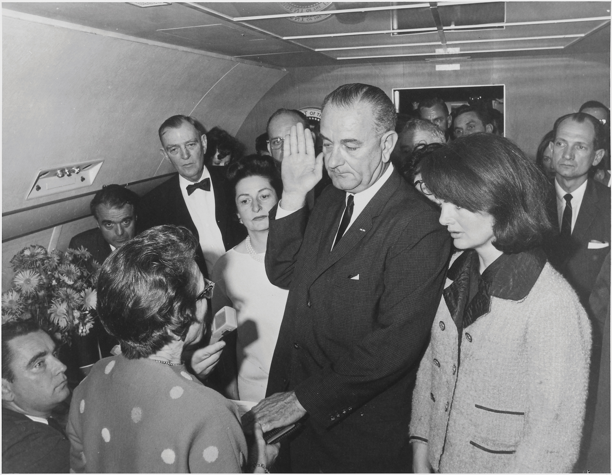
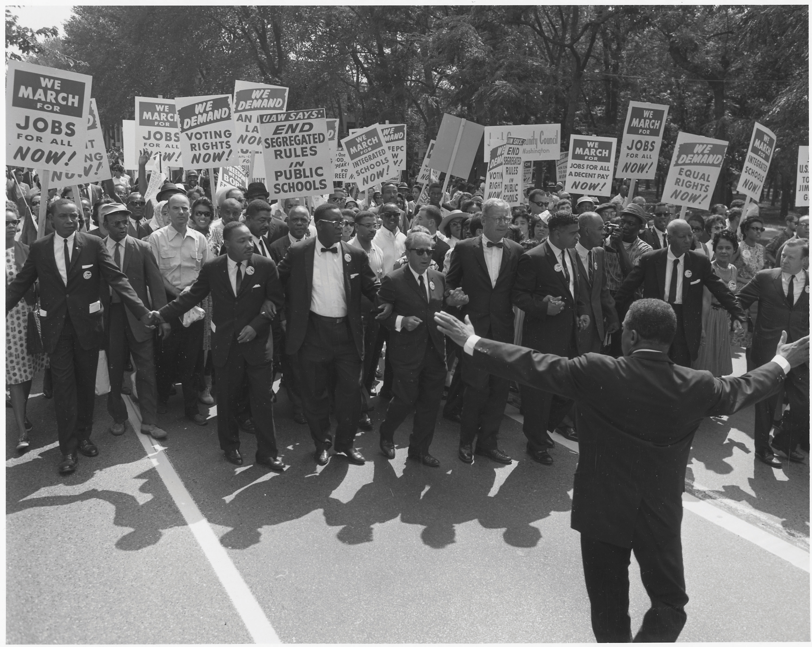
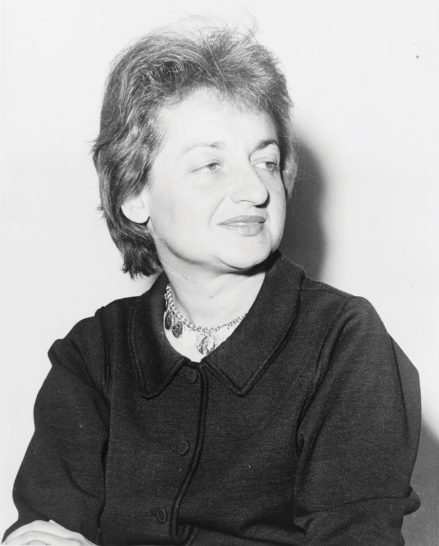
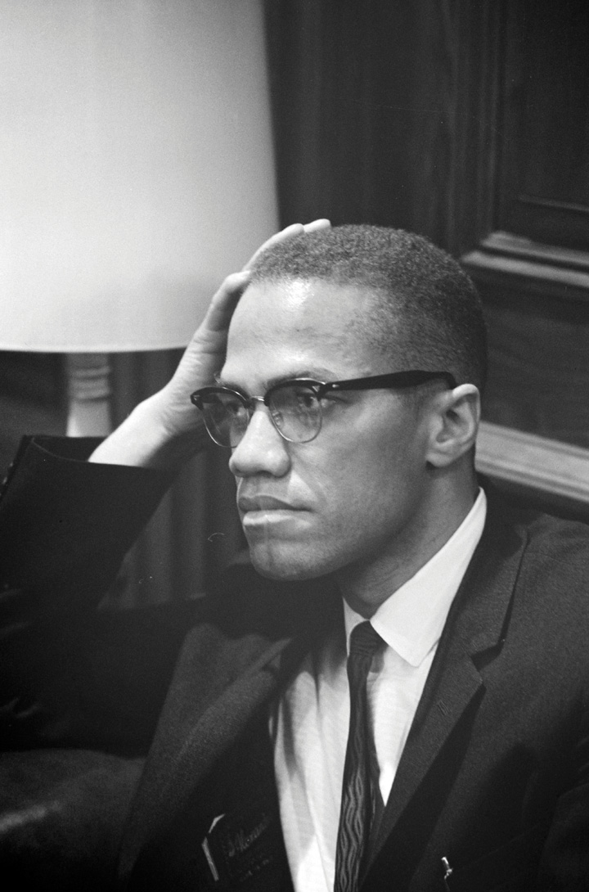
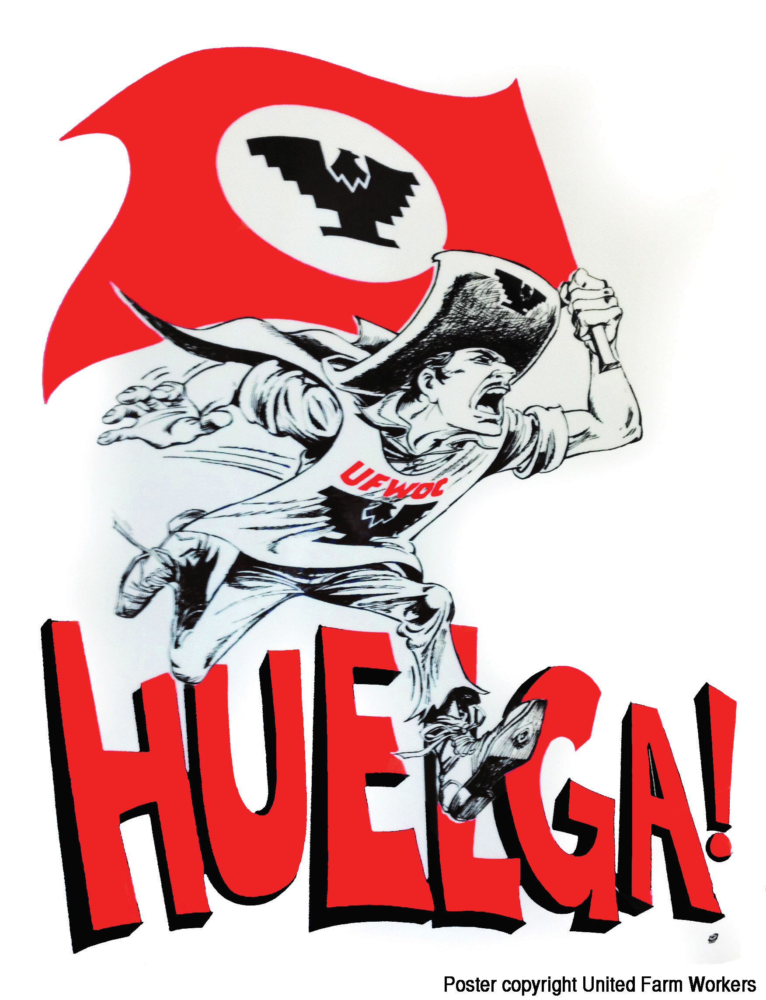
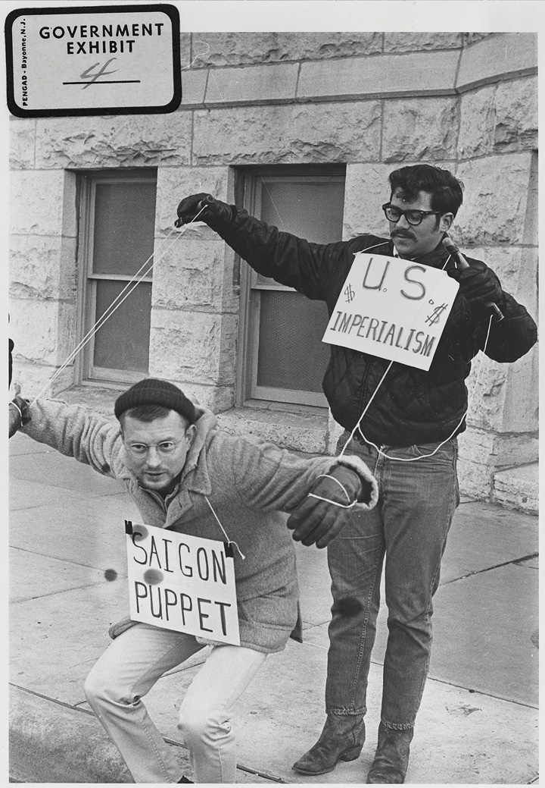
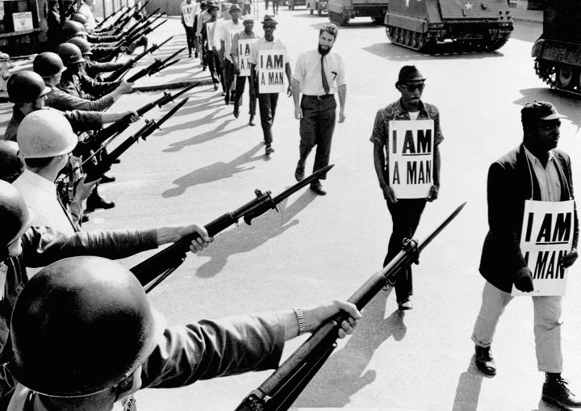

The middle and late 1960s were years of progress, protest, prejudice, and renewed hope for peace and racial justice. John F. Kennedy was assassinated, as were Malcolm X, Martin Luther King Jr., and Robert Kennedy. The postwar economic boom continued throughout most of the decade. It was accompanied by heightened fears about the possible growth of Communism abroad and escalating protests at home. The United States had grown accustomed to interpreting the events at home and around the world in terms of the Cold War. In addition, US officials were growing increasingly frustrated with the persistence of Communist forces in Vietnam in the face of military escalation. A growing number of Americans were likewise frustrated by the persistence of poverty and racial injustice. They pressed the federal government to approve meaningful laws and programs that would fulfill the promise of justice and material security. Modern feminism emerged as a force for change, along with the American Indian Movement and activism by other minority groups. Promising a Great Society, President Lyndon Johnson hoped to respond to these demands and promote greater freedom through government. In response, a growing conservative movement revived longstanding traditions that viewed the growth of the federal government as the greatest threat to liberty.
In 1963, President John F. Kennedy (JFK) once again enjoyed high approval ratings. The economy was prospering, and the ill-conceived Bay of Pigs Invasion was all but forgotten in the wake of Kennedy’s successful posturing in Berlin and the resolution of the Cuban Missile Crisis. Kennedy even began to support the limited civil rights initiatives he reluctantly inherited. At the same time, he sought to distance himself from some liberals who desired greater changes than he believed would be politically advantageous to support. His mild support of causes that were unpopular at the moment—such as civil rights—would later be among his most vaunted achievements.
The president’s admirers claim that Kennedy would have done more to support meaningful federal intervention to defend civil rights had he not been assassinated in 1963. Some also believe he would have supported the withdrawal of US troops from Vietnam. During his lifetime, Kennedy was restrained by political calculations in these regards. Privately, Kennedy responded to those calling for withdrawal from Vietnam, more support for civil rights, and more aggressive backing for health care reform with the promise that he would address these issues once he had secured a second term.
It was in pursuit of that second term that led Kennedy to Dallas in November 1963. Texas Democrats were in the midst of a political civil war regarding issues such as civil rights. To demonstrate his leadership and ensure his reelection, Kennedy hoped to unite Democrats in one of the most conservative states. He succeeded in this goal but only by becoming a martyr. On November 22, 1963, President Kennedy was shot while parading through Dallas in the back of an open limousine. He was pronounced dead a half hour later in a Dallas hospital. News of the tragedy spread instantly throughout the nation. For the first time, most Americans turned to television news anchors rather than newspaper reporters for information about a major news story. Not only did this result in a deluge of dramatic images but also in a number of reports filed in haste as some of the live television reports featured more speculation than fact. Conspiracy theories spread rapidly in living rooms across the nation as reports about the accused assassin Lee Harvey Oswald circulated. Oswald had planned on traveling to Moscow, leading some Americans to expect that the assassination had been part of a Communist plot.
Figure 11.1
Kennedy’s vice president Lyndon Baines Johnson being sworn in as president immediately following the Kennedy assassination.
The nature of live television also provided a degree of reassurance that the mechanism of government would continue to function. Millions watched as Vice President Lyndon Johnson took the oath of office while the widowed Jackie Kennedy stood in the background, still wearing a dress that bore the stains of her late husband’s blood. The capture of Oswald might have closed the case. However, live television again recorded a killing related to the Kennedy murder. Dallas nightclub owner Jack Ruby jumped out of a crowd and shot Oswald while he was being transferred from one jail to another. Oswald died less than an hour later.
Kennedy’s death left Americans with a sense that his vision for the United States might be left unfulfilled, even if few Americans agreed on what that vision entailed. Supreme Court Chief Justice Earl Warren led a six-month investigation, concluding that Oswald had acted alone in killing the president. Many Americans were unconvinced by the Warren committee’s report. Even if they disagreed about the circumstances surrounding the Kennedy assassination and the direction the country was headed, Americans agreed that the system of government established by the Constitution was durable.
Throughout history and especially during the 1960s, presidential assassinations usually resulted in chaos and turmoil, perhaps even civil war. In the United States in 1963, the presidency was quietly transferred to former Vice President Lyndon B. Johnson (LBJ) according to the terms set out by the Constitution. As president, Johnson invoked the memory of the slain leader in support of the most significant civil rights legislation since Reconstruction. He also secured passage of Medicare and Medicaid, two federal government–sponsored health care programs for the elderly and the poor. Despite these significant domestic achievements, Johnson’s bid for more sweeping reform and possible reelection would be derailed by a seemingly endless war in Southeastern Asia. For Democrats, it seemed as if the history of the Korean War was repeating itself.
A New Dealer raised in the cutthroat world of Texas politics, Johnson was a lifelong and ambitious politician who suddenly saw himself elevated to the office he had coveted his entire life. The tragic circumstances that led to his presidency precluded celebration, however, and Johnson somberly accepted the challenge of healing the nation while quietly securing his nomination and victory in the upcoming 1964 election. For Johnson, the key to both was to portray himself as the successor to Kennedy while presenting his policies as the embodiment of the martyred president’s will.
Addressing Congress moments after the nation had laid its slain leader to rest, Johnson urged Congress to “let us continue” the work of the Kennedy administration. For Johnson, this meant that an assassin’s bullet should not derail the liberal consensus based on tax reduction, federal guarantees of civil rights, and antipoverty programs. Many who had once opposed the former vice president’s policies pointed out the unfairness of Johnson equating a martyred president with his own political agenda. At the same time, Johnson skillfully presented previously controversial measures such as the 1964 Civil Rights ActPerhaps the most significant piece of civil rights legislation in US history, the 1964 Civil Rights Act banned racial discrimination in public accommodations and employment. The law also outlawed gender discrimination and established a federal agency to enforce all of its terms. as a tribute to their fallen leader and the only proper response to an act of violence. As a result, in death, Kennedy became eternally connected to a civil rights bill he had only cautiously supported in life.
African American leaders recognized Johnson’s strategy and went along with the charade by eulogizing the former president in ways reminiscent of the historical memory of Lincoln. Civil rights leaders reminded Americans that JFK had promised to eliminate housing discrimination “with the stroke of a pen” while a candidate. In actuality, Kennedy had failed to act on his promise, which had prompted thousands of African Americans to mail pens to the White House to remind him of this promise. However, presenting civil rights as part of an unfulfilled agenda of a martyred president soon became an effective way to secure historic reform legislation.
Black leaders also pointed out that JFK had asked Martin Luther King to draft a second Emancipation Proclamation that he would sign on January 1, 1963, to mark the centennial of the original. Never mind, of course, that the president had also forsaken this promise and even failed to respond to the proclamation King had prepared for the president. Kennedy was a martyred hero, these civil rights leaders reminded themselves, and any connection between the former president and their cause must be promoted regardless of historical accuracy. Perhaps Kennedy would have supported the 1964 Civil Rights bill, they privately counseled one another; after all, the former president had recently addressed the nation on the issue against the counsel of his political advisers who feared any support for the proposed bill would cost him the election.
Figure 11.2
The organizers of the 1963 March on Washington lead the march in front of thousands of participants with signs calling for equal employment, voting rights, and the end of segregation. Each of the leading national civil rights organizations was represented on the program, and Martin Luther King Jr. was selected to speak last. Although women were often the most active organizers within these organizations, efforts to recognize their contribution were only belatedly added to the schedule of events.
Martin Luther King Jr. recognized that proposing a civil rights bill would not secure its passage in Congress. Even worse, presidents could claim to support the bill only to hide behind its failure each year. This would allow whoever occupied the White House to portray themselves as supporters of civil rights without actually securing any meaningful advances for black voters. King teamed up with veteran organizer A. Phillip Randolph and announced a march on Washington designed to force Congress and President Kennedy (who was still alive at the time) to support the bill. Approximately 300,000 Americans, two thirds of whom were black, converged on the nation’s capital for the March on Washington for Jobs and FreedomA 1963 protest that called on the federal government to pass sweeping civil rights legislation while also publicizing the lack of economic opportunity for African Americans. The march was a coordinated effort between the six leading civil rights organizations and is best remembered for Martin Luther King’s iconic “I Have a Dream” speech. in the summer of 1963. The protest was aimed at publicizing the need for antisegregation laws but also ensuring that all Americans would be given equal political and economic opportunity that would render such laws meaningful.
The march reflected the competing ideas of the six leading civil rights organizations that organized the march. Leaders of the Urban League and A. Phillip Randolph’s labor union spoke of the need for economic advancement, while younger leaders such as John Lewis of CORE were more controversial in calling for more radical change. The meetings also reflected the paternalistic orientation of these organizations; a brief acknowledgment of female leaders was only belatedly added to the agenda.
King was given the final spot on the schedule and rose to the stage after a brief announcement that W. E. B. Du Bois had passed away in Ghana. King then rose to the podium and delivered his famous “I Have a Dream” speech. King’s address remains an iconic moment in US history. It was also a moment where the mantle of leadership was symbolically passed from the generation of Du Bois to the charismatic young preacher from Montgomery, Alabama. Meanwhile, another young and charismatic clergyman named Malcolm XBorn in Omaha and raised in the Midwest, Malcolm X experienced many of the more subtle forms of discrimination that was common in the North. In prison, Malcolm joined the Nation of Islam and became the leading spokesman of the conservative black Muslim sect until his split with Elijah Muhammad in the final year of his life. criticized the March on Washington as a pep rally for sycophants and fools who believed they could promote meaningful change through the existing white-dominated system. The next Sunday, a bomb exploded during services in a black church in Birmingham, killing four little girls. In their memory, Democratic leaders and President Johnson rallied behind the 1964 Civil Rights Act the following year.
Figure 11.3

African Americans in Washington, DC, march in response to the bombing of a black church in Birmingham that killed four young girls. One of the victims was a childhood friend of future Secretary of State Condoleezza Rice.
Virginia congressman and segregationist Howard Smith proposed an amendment to the 1964 Civil Rights Act that added “sex” to the act’s existing provisions, guaranteeing equal opportunity in employment regardless of race, creed, color, and national origin. Because he and the other nine Southern congressmen who supported the amendment prohibiting gender discrimination strongly spoke in opposition to and voted against the Civil Rights Act, most historians believe that Smith’s amendment was intended to divide supporters and ultimately prevent the law from being passed. Smith understood that the majority of his peers now supported a law banning racial discrimination, but he believed that they considered gender to be a valid consideration among employers and would not pass the Civil Rights Act if it mandated equal treatment of men and women.
If derailing the Civil Rights Act of 1964 was indeed Smith’s intent, he was borrowing a strategy used by opponents of civil rights provisions dating from Reconstruction. For example, opponents of black suffrage in the 1860s added women’s suffrage to proposed laws that would have permitted black men to vote. These provisions led to the defeat of black suffrage before the passage of the Fifteenth Amendment, as well as the defeat of several civil rights laws throughout the twentieth century. In 1964, however, the Civil Rights Act was passed as amended, outlawing segregation while banning both racial and gender discrimination by employers. The act also created the Equal Employment Opportunity Commission (EEOC), which was charged with enforcing the terms of the new law.
One of the strongest opponents of the 1964 Civil Rights Act was Arizona Republican senator Barry GoldwaterA leading conservative and Republican nominee for president in 1964, Goldwater rallied those who believed the federal government was becoming too big and too powerful. Goldwater also opposed the 1964 Civil Rights Act, while personally claiming that he supported the goals of integration. Goldwater was defeated in a landslide in 1964 but continued to be a leading member of the conservative wing of the Republican Party.. Goldwater represented the conservative wing of the party and secured the Republican presidential nomination shortly after the Civil Rights Law was passed. As a result, the 1964 election was a clear ideological contest between the relatively liberal Johnson against the archconservative Goldwater. The author of Conscience of a Conservative, a best-selling autobiography that challenged images of the political right as reactionary and void of positive ideas, Goldwater hoped to reverse the growth of government in every way except national defense. As a candidate, he also promised to replace containment with a more aggressive strategy that would strangle and eliminate communism.
Figure 11.4

Arizona senator Barry Goldwater sought to distance himself from extremists such as these Klansmen who were demonstrating on his behalf during the election. However, his recent opposition to the Civil Rights Act of 1964 furthered the association between the conservative movement Goldwater represented and those who opposed racial equality.
Although many Americans equated conservative ideas, such as states’ rights, with the defenders of slavery and racial segregation, Goldwater sought to prove that conservative ideas had positive value for all Americans. He personally approved racial integration in schools but did not believe that the federal government had the power to “force” any state or locality to change the way it did business. More importantly, Goldwater predicted that such attempts would only harden racial prejudice and ensure that well-meaning attempts to integrate schools would fail in ways that harmed all children. For African Americans and many liberal whites, however, Goldwater’s advice to be patient and wait until whites of the Deep South sought integration was disingenuous at best. It also did not help that Goldwater had the backing of leading white segregationists such as Alabama governor George Wallace, who had proclaimed “segregation forever” the year before.
Other conservatives developed organizations and started journals such as the National Review in hopes of spreading their ideas. One of the leading conservative publications, the National Review, had originally supported white Southern intransigence to civil rights in terms that reflected support of white supremacy. By the mid-1960s, however, the journal began to be more critical of arch-segregationists and focused more on the issue of limited federal power. Among intellectuals, the political and economic theories of Friedrich Hayek united most conservatives and increasingly influenced moderates and even some liberals. Hayek posited that increases in governmental power, even under the best of intentions, would inevitably build upon one another until the government had grown so big and so powerful that it controlled nearly every aspect of life.
Other intellectual conservatives offered a spin on Marx’s view of historical progression to warn the United States that like other great powers, the US government was in danger of growing too big and squandering its resources at home and abroad. Liberals countered that conservatives only supported limited government when it came to social programs and actually favored increased spending for military and law enforcement. Conservative intellectuals continued to refine their ideas in ways that would lead to a conservative revival by the end of the decade. However, in the early 1960s, most Americans identified themselves as liberal. When these individuals imagined a typical conservative, conspiracy theorists like the John Birch SocietyA radical conservative organization that opposed the passage of the Civil Rights Act and viewed US participation in the United Nations as part of a radical conspiracy to lessen the sovereignty of the nation until the world was ruled by a single collectivist government. and militant white segregationists remained the dominant image.
Formed in 1958, followers of the John Birch Society believed they were ideological soldiers in a war against liberals, whose every move was calculated to bring the United States to its knees. By 1963, more than 100,000 Birchers spent much of their time writing letters to editors warning of the dangers of governmental programs and civil rights as harbingers of Socialism and interracial marriage. Even candidate Goldwater was not conservative enough for these on the extreme right, but he spoke to many of the Birchers’ fears that the Republican Party had been co-opted by liberals. Why else would President Eisenhower have permitted FDR’s programs to continue, he asked, while most leading Republicans in Congress acted as if they were running some kind of “dime-store New Deal”?
Goldwater not only spoke to the fears of many anxious whites who thought society was changing too quickly, but he also spoke without the usual politician’s filter. At times, this could be harmful. For example, speaking to a group of Midwesterners, the Republican nominee once asserted that the nation would be better off if the East Coast, a reference to Northeastern liberals, was severed from the nation and sent “out to sea.” The Democrats responded by running TV ads throughout the East that featured a cartoon saw slicing off the East Coast while Goldwater’s words played in the background. One of LBJ’s ads went too far by insinuating that a vote for Goldwater was a vote for nuclear armageddon. Although the ad was immediately recalled, Goldwater’s own rhetoric had created the notion that he lacked the patient temperament needed to be a leader of a nuclear power. Johnson won every state outside of the Deep South and Goldwater’s home state of Arizona.
Figure 11.5

Lyndon Johnson defeated the conservative Republican Barry Goldwater in 1964. However, conservative ideas would gain support following Goldwater’s landslide defeat.
Goldwater’s support among Southern whites from Louisiana to South Carolina was largely the result of LBJ’s support of legislation forever banning racial segregation. Because of this legislation, black Americans generally supported Johnson’s campaign even though they recognized that Johnson shared many of the racial assumptions of many whites. Legendary musician Dizzy Gillespie ran a mock campaign for president that trumpeted many of Johnson’s shortcomings. Gillespie promised to support the Democratic candidate when he finally offered genuine support for black Americans. Until then, the trumpet player campaigned promising to end the Vietnam War, poverty, and racial segregation. Gillespie’s America would be personified by his replacement of the White House with a “Blues House” where all Americans would be welcome. Gillespie also promised to appoint a number of prominent jazz musicians as cabinet officials and ambassadors, explaining his belief that the improvisational nature of jazz required individuals who intrinsically knew how to work with others to create harmony. The campaign raised money for civil rights causes, but it was more effective in reminding the Democrats that they needed to support civil rights initiatives if they expected the black vote in the next election.
One of black voters’ leading demands was that their local schools finally be required to comply with the 1954 Supreme Court decision in Brown v. Board of Education. The schools of Virginia provided a clear example that the federal government would have to intervene. After the schools of Virginia failed to integrate, black plaintiffs sued and won three separate victories as the federal courts ordered the integration of the schools in Warren County, Charlottesville, and Norfolk. In reaction, the Virginia governor ordered that all of the public schools in these districts close, and state officials required that any school district ordered to integrate must also close its doors. This strategy of thwarting integration at all costs, even if it meant closing schools for white children, was known as massive resistanceA term used to describe the various strategies employed by Southern whites to prevent school integration. Some of these strategies included passing laws mandating that schools be closed if forced to integrate.. In 1959, black plaintiffs in Prince Edward County, the same Virginia school district that had been home to one of the original five cases that were consolidated into Brown v. Board, sued in federal court. As had been the case in the other Virginia cases, the board was ordered to integrate. However, the all-white school board had already decided that it would close all of the county’s public schools if the appeal was lost. In addition, the federal courts had not yet declared that Brown v. Board applied to private schools. As a result, board members had devised a plan where public school resources would be used to create a number of “private” schools for white children.
The “privatization” of the Prince Edward County schools in the early 1960s demonstrated a new tactic available for advocates of massive resistance. Publicly owned schools were “leased” to individuals who hired the same white public school teachers to teach in what was now called a “private” school. Although segregationists were able to use a variety of methods to finance their schools with public money, the schools still required some tuition and private donations to function. As a result, many white children were also denied school privileges. As a form of denying racial discrimination, the school board suggested that middle-class African American parents open similar “private” schools for their children. While some black parents pursued this strategy with mixed results, others pointed out that doing so simply perpetuated segregation while shifting more of the financial burden for school funding on parents. Other black parents continued their fight in the courts until they secured a Supreme Court decision ordering the county school board to reopen and integrate the public schools. During the five years that the schools were closed, working-class white and black families drew upon networks of community and kin, pooling money and sending their children to live with out-of-state families.
Photos of angry demonstrations and even violence against the first black children to attend a particular school provide the most poignant images of school integration. However, the greatest obstacle to integration may have been waged by thousands of community groups that defended segregation with the demeanor of a local PTA meeting. Many of these organizations had progressive-sounding names that gave the appearance of defending children or promoting harmony. Others adopted names such as the White Citizens Council (WCC). Each of these groups devised methods to indefinitely postpone school integration through procedural delays, legal challenges, redrawing school boundaries, and creating integration advisory boards that never met.
Groups such as the WCC also sought ways to intimidate black leaders and isolate black families whose children were part of an integration lawsuit. WCC chapters were composed of city officials, business leaders, and middle-class white parents. Some chapters even received city and state tax dollars to fund their operations. The preferred tactic was usually nonviolent, convincing employers to fire any person known to favor integration. If an individual was self-employed, the WCC worked covertly to convince local banks to cut a family’s line of credit, even foreclose on mortgages that were in good standing to force integrationists to leave town.
While the WCC officially condemned violence, those black leaders and families that somehow continued their fight for integration were frequently the victims of drive-by shootings and arson. The year following the Brown decision, seven black leaders were murdered or went missing in Mississippi alone. In contrast to Border South states like Virginia and large cities such as Little Rock, few lawsuits were filed to try to force the integration of schools in Mississippi, Alabama, and Georgia. Border South states such as Missouri and West Virginia saw little violence but only piecemeal integration until the late 1950s and early 1960s. School boards in these states typically integrated only one or two grades each year.
The gradual elimination of legal segregation did not remove barriers to meaningful integration. Black students were often barred or heavily discouraged from participating in extracurricular activities they had previously enjoyed. More importantly, the end of segregation also meant that many black teachers were fired rather than permitted to teach in mixed-race schools. Black communities lost control of venerable institutions such as Sumner High in St. Louis and Garnett High in Charleston, West Virginia. These schools were the center of black community life and boasted a teaching corps with more advanced degrees than many colleges. Integration was recognized as an important step toward racial equality, yet for black students who navigated a gauntlet of racism each morning, black teachers who lost their jobs, and black community members who lost control of their local schools, integration continued to place the burden of race squarely on their shoulders.
Figure 11.6
Betty Friedan was a labor activist and the author of the influential book The Feminine Mystique. She would also become the founder and first president of the National Organization for Women (NOW).
Even as more and more Americans supported the idea that race should not be a barrier to employment, most Americans believed that gender was a valid consideration on the job market. Newspapers divided their advertisements for jobs into “Help Wanted (Male)” and “Help Wanted (Female)” sections, and most large businesses kept separate lists of male and female employees for purposes of determining seniority and promotion. Given the assumption that women were provided for by a male breadwinner, few companies provided benefits such as health insurance or pensions for female employees. For those female workers who were married to husbands who received family benefits, these kinds of benefits were less important than fair pay. But for the 40 percent of working women who were single, and for the women who might someday become divorced or widowed, gendered assumptions about wages and benefits were painful reminders that they were not part of the idealized female world of pampered domesticity.
At the same time, many women believed that gender differences should be considered in the workforce. Many states had laws granting time off for pregnancy and child care and other provisions specifically designed to protect women in the workplace. Some of these laws, such as limitations on the number of hours a woman might be required to work, might either benefit a particular female employee or serve as a barrier from obtaining needed overtime pay. In addition, some companies had internal policies granting women longer breaks, days off for child care, and even more days for sick leave. Some women worried about whether laws mandating an end to gender discrimination might lead to the elimination of laws protecting pregnant workers or recognizing the domestic responsibilities of women who worked part time.
The emerging civil rights movement and the experience of many women in labor unions helped to promote ideas about the rights of the individual and the power of collective action. Even as the nation’s imagined “ideal woman” took a step away from “Rosie the Riveter” and toward the popularized image of sitcom housewives Donna Reed and June Cleaver, a number of female activists mobilized in favor of greater opportunities for women who worked outside of the home by choice or necessity.
One of the greatest obstacles these women had to overcome was the notion that female employment outside the home was unnatural or undesirable. Many women, as well as men, viewed female labor as a temporary evil that should only be endured during periods of personal financial crisis or war. Many activists tried to show the nation that the idealized image of a dependent housewife within a well-provisioned home not only limited women’s freedoms but also ignored the reality of life for many women. Nearly half of working women at this time were single, and 10 percent of children were born out of wedlock throughout the 1950s and 1960s. Others tried a more radical approach using the rhetoric of labor unions about the rights and dignity of all workers combined with the tactics of civil rights activists.
Similar to feminists of previous generations, women’s rights activists used both conservative and radical approaches to spread their message. For example, one popular conservative strategy was to liken opponents of equal employment as cowardly assailants of women and mothers, many of whom lacked “male protection.” Others sought to connect women’s patriotic service against fascism in World War II with the ongoing contest against Communism. Others like Betty FriedanAn author for several labor organizations, Friedan challenged the practices of US corporations in paying women less than men for the same work. Friedan is most famous as a writer for her book The Feminine Mystique, which challenged Americans to reconsider the notion that women were naturally content living a life of domesticity. Friedan would later found the National Organization of Women and become its first president. became involved in labor unions and exposed corporate wage tables that used gender as a determinative factor. For example, one of Friedan’s articles listed the pay rates for male and female laborers in leading companies like General Electric and Westinghouse. The same article revealed that the average black woman earned less than half of the average white woman and that the pay differential between men and women resulted in billions in corporate profits.
Friedan rose to prominence after publishing The Feminine Mystique, a book capturing the discontent that many American women felt in a society that minimized their contributions and restricted their options. She and other women of the postwar period helped to create what soon became known as Second Wave FeminismA blanket term for the growth of women’s rights activism in the late 1950s and 1960s, Second Wave Feminism refers to attempts to eliminate social and economic discrimination against women. The First Wave refers to those who fought for the elimination of legal barriers, such as the rights of women to vote, hold private property, and run for political office. Members of the Second Wave argued that the elimination of legal barriers had not removed all forms of discrimination against women. Although commonly associated with the 1960s and 1970s, the roots of Second Wave Feminism can be seen in the postwar era.. By this definition, previous generations of feminists were part of a First Wave that worked to overturn legal obstacles to equality, such as prohibitions against women’s suffrage and property ownership. Women of the postwar period were part of a Second Wave that challenged lasting inequalities, which remained impervious to the repeal of explicitly discriminatory laws. In so doing, these 1960s feminists sought to establish and defend equal rights and opportunities for women. In an era where most women accepted a modified version of the “separate sphere,” feminists of the 1960s challenged the notion that gender should predetermine one’s role in society.
Most women in the 1960s took a more tactical approach, seeking tangible gains for women in the workforce, including safeguards against termination for life events such as marriage and childbirth. This was important, because employers at this time frequently dismissed female employees when their pregnancies became known. These mothers were generally replaced by younger women who could be paid less and would agree to contracts stipulating that they would resign if they should become pregnant. This practice not only thwarted a woman’s ability to achieve seniority and promotion but also reinforced notions that female employment was temporary. Few companies would bother training even the most talented young women for positions beyond the entry level if they believed their ability to serve the company would be interrupted for two or three decades following childbirth and motherhood.
Dozens of industrial nations had provisions guaranteeing time off and some financial compensation for pregnant employees by 1950. In the United States, only Rhode Island had a similar provision at the state level, and it would take nearly three decades for the federal government to pass similar legislation. Women’s leaders and organizations in the United States participated in the United Nations International Labor Organization, which, among other things, sought to define and defend the rights of female workers. In 1952, this organization recommended that employers be required to provide medical coverage and twelve weeks of paid leave for pregnant women. Most Americans paid little attention to these recommendations and believed that companies should not be required to provide even unpaid leaves of absence. Even the more radical American women who participated in the 1952 meetings believed that the UN recommendation would result in fewer companies being willing to hire women of child-bearing age. As a result, women’s groups in the United States lobbied for provisions guaranteeing that pregnant women could keep their jobs and take unpaid leaves of absence. With the exception of state and local laws, their efforts were not rewarded until the Pregnancy Discrimination Act of 1978.
Popular culture soon reflected the movement from the city to the suburbs. Leading sitcom families in 1950s programs such as I Love Lucy and The Honeymooners were apartment dwellers, but by the 1960s, Americans gathered to watch the daily lives of suburban families in Leave it to Beaver and similar programs. While popular culture extolled the virtues of suburban life, a new generation of restless suburban youths continued to embrace counterculture modes of expression. Beneath the façade of conformity and contentedness, the youths of the early 1960s experimented with similar styles of music, literature, and drugs the beatniks had embraced in the previous decade.
Although few beatniks would have appreciated the tribute, 1960 was also the year that a British rock band called themselves The Beatles and began their meteoric rise. Offering a middle-class version of the rebellious posturing of the previous generation, The Beatles soon embodied the essence of suburban youth culture in the mid-1960s. The final years of the decade, however, featured a culture far more rebellious than the clean-cut teen idols from Liverpool. In 1969, half a million hipsters and fellow travelers converged upon a farm in upstate New York in 1969 to witness rock ‘n’ roll deliver its own proclamation of emancipation at a concert called Woodstock.
Lyndon Johnson rose to prominence in 1948 after election returns of questionable veracity declared the young man from the hill country of Texas that state’s senator by a mere eighty-seven contested votes. Now president, Johnson hoped to put the unfriendly nickname of “Landslide Lyndon” behind him forever by becoming the next Franklin Roosevelt. Although the economy appeared strong, sociologists had produced numerous studies detailing how a fifth of the population lived in squalor. Johnson’s supporters believed that the persistence of poverty in the wealthiest nation on the globe was more than a cruel paradox. In response, one of the first initiatives Johnson declared was a “war on poverty.” In August 1964, Congress passed Johnson’s Economic Opportunity Act. This law provided an average of $1 million for nearly 1,000 locally organized community action agencies around the nation. The president also created the Job Corps, which provided vocational training for young adults in the hopes of breaking the cycle of poverty.
Johnson labeled his sweeping domestic agenda as The Great SocietyThe slogan used by President Lyndon Johnson to promote a variety of proposed domestic legislation aimed at eradicating poverty and racial injustice. and proposed dozens of new laws and new agencies to deal with the problems of poverty and racial injustice. Supporters hailed the programs launched between 1965 and 1967 as a modern-day New Deal complete with a new alphabet soup of federal programs. The Volunteers in Service to America (VISTA) employed young and old Americans to conduct service projects in impoverished cities. Two new cabinet-level agencies, the Department of Transportation (DOT) and the Department of Housing and Urban Development (HUD), were added to the alphabet soup of federal acronyms. Johnson also supported the creation of the National Endowment for the Humanities and the National Endowment for the Arts, provided federal assistance for public broadcasting, and increased federal aid for colleges and students. The most controversial programs, however, were those that provided direct payments to the poor. Food stamps and other programs shifted the burden of poverty relief from cities and states to the federal government. Although some feared that Johnson’s welfare programs would encourage dependency and sap the ambitions of the poor, many greeted the program with optimism, believing that it would reduce fraud while providing a more complete security net against poverty.
Figure 11.7

This 1968 poster was made by the federal government to inform seniors about Medicare, a program that was part of the Social Security Act of 1965. Medicare is a federal health insurance plan that provides benefits for individuals who are eligible for Social Security.
This optimism was not enough to carry an ambitious plan to provide national health insurance, a plan originally proposed by FDR that continued to stall in Congress throughout the 1960s. Congress and President Johnson instead secured passage of MedicareA leading provision of the 1965 Social Security Act, Medicare provides health insurance for Americans age sixty-five and older who meet other eligibility requirements for Social Security benefits. in 1965, a federal system of health insurance for the elderly. Less than half of Americans above the age of sixty-five had any medical insurance, a situation that prevented many older Americans from obtaining medical care. Given the political power of senior citizens, the president quickly approved Congress’s plan to fund Medicare through an increase in Social Security taxes. The original plan failed to cover dental care, eyeglasses, certain prescriptions, and a host of other important services and procedures. However, seniors could choose either Plan A, which offset most hospital bills, or Plan B, which functioned much like an employer’s health plan with the recipient paying small premiums while the government shouldered the majority of the cost. Congress also approved MedicaidCreated in 1965 as part of Lyndon Johnson’s Great Society, Medicaid is a federal program administered by states and provides health insurance to the disabled and low-income Americans who are eligible for federal assistance., a program providing medical benefits for recipients of welfare and the disabled.
Although the federal government had passed numerous laws guaranteeing the right to vote regardless of race, African Americans throughout the South continued to be disenfranchised by a variety of methods. Black leaders throughout the South challenged their exclusion. Thousands had worked quietly to increase voter registration throughout the 1940s and 1950s, yet fewer than 2 percent of eligible black voters were registered and even fewer were able to vote. For example, black and white leaders at the Highlander Folk School in the Appalachian Mountains of Tennessee launched citizenship education schools throughout the South. Under the leadership of civil rights veteran Septima ClarkKnown to many as “Freedom’s Teacher,” Clark innovated the use of citizenship education schools that taught black Americans reading skills that prepared them to pass literacy tests required for voter registration. As director of the Highlander Folk School’s outreach program, she trained and recruited teachers of these schools throughout Appalachia and the South. and teachers like South Carolina’s Bernice Robinson (a beautician with no teaching experience), these schools taught literacy skills needed to pass voter registration exams. Robinson’s role as a beautician was important because she was self-employed and her clients were all black. Unlike existing public school teachers, Robinson could not be fired by a white school board member or harassed by a white suprervisor as had occurred so often in the past.
The citizenship school movement expanded rapidly in the early 1960s. Leaders from a variety of civil rights organizations, such as CORE, along with hundreds of Northern college students descended upon Mississippi in 1964 in what became known as the Mississippi Freedom SummerA sustained campaign by local African Americans and college students throughout the nation to protest continued disenfranchisement in Mississippi and throughout the South. Students taught reading skills to adults wishing to pass literacy tests while local activists formed their own political party to protest their exclusion from the white-controlled Democratic Party of Mississippi.. Many of the rural counties in the Delta had black majorities yet did not have a single registered black voter. Whites claimed that this was because black residents cared little for politics, but the reality was that any black person who registered to vote did so at great personal risk. For example, in 1963 Mississippi passed a law requiring the name of any new registrant to be published in the city paper. Allegedly meant to provide fellow citizens an opportunity to identify any nonresident, felon, or otherwise nonqualified voter, any black residents whose names were published soon found themselves fired from their jobs, evicted from their homes, and a handful even went missing.
Figure 11.8

Civil rights leaders Septima Clark (left) and Rosa Parks (right) enjoy a moment together at the Highlander Folk School in Monteagle, Tennessee.
Mississippi law also required any potential registrant to read and interpret a section of the state constitution. A provision officially meant to screen against illiterate voters who might accidentally vote for the wrong party, the test was often used to reject black voters. The exam was a subjective measure administered by white registrars who often failed black attorneys and black professors while approving the applications of illiterate whites. In George County, one white applicant interpreted the phrase “There shall be no imprisonment for debt” to mean “I thank that a Neorger should have two years in collage before voting because he don’t under stand.” This individual, and tens of thousands of other semiliterate whites, passed the exam. In other areas, however, the laws were used to restrict poor whites with little opportunity for education from voting. As a result, some poor whites joined the Freedom School movement and recognized their common cause with black Southerners.
The Freedom Summer challenged the nearly complete disenfranchisement of African Americans in the Deep South as thousands of black and white college students from throughout the nation converged upon Mississippi and other states to register black voters. Following the methods of Septima Clark’s citizenship schools, participants in the Freedom Summer organized classes that prepared potential voters for the registration exam. Robert Moses, a former school teacher who had been working in the state to register voters, helped to train the students and prepare them for the threats and violence they would face. Almost a thousand attended a week-long workshop at Miami University in Ohio where they learned skills such as how to protect their head and vital organs while being clubbed.
We knew, we knew that to get black people registered to vote…but we also knew that for many of those people who weren’t registered, the most important thing to them was often something different. Causing political change through voting was too intangible at first. They wanted to be able to order something out of a catalog, or read a letter from one of their children from out of town without having to take it to a neighbor or their white employer. That meant more to them than a registration certificate at that moment. They just couldn’t see that far down the road. So you dealt with them on that level. You had to. The rest followed. That’s why those schools worked.
—Bernice Robinson, Highlander Participant and Citizenship School Teacher in Coastal South Carolina
This training proved invaluable as the students dedicated themselves to nonviolent resistance. Hundreds were attacked and arrested, while dozens of churches that were used to hold classes were bombed. Three civil rights workers, James Chaney, Andrew Goodman, and Michael Schwerner, went missing while traveling through Philadelphia, Mississippi, that August. Hundreds of reporters and FBI investigators swarmed Mississippi to join in what many increasingly realized was a recovery operation to find the bodies of the three young men. “We all knew that this search with hundreds of searchers is because Andrew Goodman and my husband are white,” Rita Schwerner explained to a shocked nation. “If only Chaney was involved, nothing would have been done.” Investigators stumbled upon a half-dozen bodies of local black civil rights workers before finding the three students.
Figure 11.9

Fannie Lou Hamer was one of the sharecroppers who registered to vote during the Freedom Summer of 1964. She was fired, evicted, arrested, and beaten while in prison for her efforts to register other black voters. She is pictured here representing the Mississippi Freedom Democratic Party at the 1964 Democratic National Convention in Atlantic City, New Jersey.
The funeral of James Chaney reflected the anger of many African Americans as they increasingly recognized the second-class status they were given in their own freedom struggle as TV cameras and FBI investigators continued to only report on the actions of white students. But the civil rights movement did not yet fragment along racial lines as it would in the late 1960s. The presence of white students brought TV cameras, which publicized the plight of Southern blacks who recognized that the students were one of the few allies they had. Together, some progress was made even in places like Leflore County where no African Americans had voted in years. A county with a black majority, 1,500 black residents attempted to register, and with the national media present, local registrars could find no reason to disallow 300 of these applications.
Whites in Mississippi prohibited black voters from participating in the Democratic primaries, claiming that this was legal because their organization was private and therefore exempt from the Fifteenth Amendment. African Americans and a handful of white supporters formed the Mississippi Freedom Democratic Party (MFDP) in response. The MFDP challenged the legitimacy of the white-only Mississippi delegation to the 1964 Democratic National Convention. Wishing to keep white Southern voters from supporting a third-party segregationist candidate, the Democratic Party recognized the white-only Mississippi delegation and offered the MFDP only a token number of delegates. MFDP leader Fannie Lou Hamer soon became the public face of the voting rights movement in Mississippi when she explained why her organization could not accept this token offer. Hamer described her own experience of being beaten while in prison for attempting to register black voters in Mississippi, exposing the hypocrisy of Democratic leaders who spoke of the political sacrifices they had made by offering token support to the MFDP. The following year, Democrats hoped to avoid future controversy and approved the 1965 Voting Rights ActA law intended to enforce the provisions and intent of the Fifteenth Amendment, which barred race as a reason for denying any US citizen the right to vote. The law gave the federal government the power to oversee elections and intervene if it believed that the rights of voters were being infringed.. This law allowed for federal supervision of voter registration and elections when racial discrimination was suspected. “Mississippi has been called ‘The Closed Society,’” explained organizer Robert Moses. “We think the key is in the vote.”
President Johnson praised education as the “key which can unlock the door to the Great Society.” The president supported the Higher Education Act, which expanded work-study programs and provided loans for tuition and living expenses. These loans would be serviced through private banks but would feature low interest rates because the federal government would guarantee payment. Now all young adults who did not have a wealthy family member to cosign their college loans could turn to their Uncle Sam.
More controversial was Johnson’s desire to vastly expand federal aid to K-12 education. Kennedy had attempted a similar measure, but his opposition to funding parochial schools (a provision the Catholic Kennedy supported but feared would prove politically suicidal) derailed the measure. Johnson’s bill worked around the controversy by providing subsidies for families with children in private schools (rather than the schools themselves). The primary feature of the Elementary and Secondary Education Act of 1965, however, was the allocation of $1 billion in federal aid for public schools. By bridging the political divide between the supporters of private and public schools, Johnson’s bill was the first legislation providing significant funding to K-12 education. Previous laws tied this funding to school integration, which probably did more than Brown v. Board to encourage integration in hundreds of school districts. Equally important, the 1965 law began a historic shift in the way public schools were financed. Advocates of federal aid believed that this revenue would compensate for the inequities of locally funded schools. However, poor districts still spent far less per pupil, and federal aid increasingly became an excuse to cut school funding in many districts.
Medicare provided benefits for nearly 20 million Americans but did not cover a host of expenses, such as prescription drugs, leading many to criticize the program for its “gaps” in coverage. In addition, the program quickly became one of the government’s leading expenses and required continual increases in taxes. Part of the reason was that the plan was designed to placate lobbyists representing the American Medical Association (AMA), which had derailed two decades of government health insurance proposals that contained cost controls and limits on procedures as “socialized medicine.”
Desirous to pass the law without the opposition of the AMA, the plan did little to regulate the costs of medical care or the procedures that might be covered. As a result, medical providers were now paid primarily by insurance companies and the federal government, and they responded by raising their prices an estimated 14 percent per year. Unlike the free market where consumers pay directly and therefore shop for the best prices, recipients of Medicare and Medicaid cared little for the cost of service. Medicaid recipients had previously gone without medical service due to their inability to pay, but once the federal government assumed payment for emergency care, an increasing number of poor Americans went directly to emergency rooms for medical care. In addition, a handful of doctors set up clinics in poor neighborhoods, and these clinics routinely performed unnecessary and expensive tests on Medicaid clients as a way of defrauding the government.
Figure 11.10

Claudia Taylor Johnson, better known as “Lady Bird” Johnson, celebrates a Minnesota Head Start program with some of its students. The First Lady was active on behalf of a number of causes during her husband’s administration and was also a successful business leader both before and after her tenure in the White House.
The nation’s increasing standard of living, expanded government programs for the poor, and even the rhetoric of civil rights activism were helping to create a culture of entitlement among many Americans. The notion that a certain minimum standard of living was a “right” that all Americans were entitled to increasingly gained currency throughout the 1960s. Most recipients of government aid in the United States ate meat every day and lived in homes with electricity, running water, and central heating. Each of these was a rare luxury in most nations, while the latter three were relatively new inventions. However, federal programs such as Aid to Families with Dependent Children operated through matching grants to states and therefore failed to provide any benefits to some of the poorest families in states that could not adequately subsidize the program. Still, conservative reservations about providing direct aid to the poor, combined with reported abuses of governmental assistance, led to relative declines in public support for Johnson’s war on poverty.
Figure 11.11

As a daughter of the Jim Crow South, civil rights leader Ella Baker devoted most of her efforts to challenging racism. However, Baker also believed that racism was a symptom of a larger social illness that kept people and communities from recognizing their common interests and working together to solve common problems.
One of the first casualties of the Great Society was the gradual defunding of community action agencies. Inspired by sociologists who identified a “culture of poverty” as the greatest enemy in Johnson’s war, federal money was supposed to be directed to these local and autonomous community groups who would then decide how the money would be best spent. The law required that the poor themselves were supposed to lead these groups as much as possible, a provision Johnson hoped would help the poor to learn to help themselves. The provision was both simple and radical. If larger and larger numbers of poor people became engaged in their own welfare, the cycle of poverty might slowly grind to a halt.
Believing that ordinary people who mobilized in an organized, democratic, and meaningful manner might reinvent themselves and their communities, reformers and activists joined with the working poor to create a host of programs such as Head Start, which provided aid for education in poor communities. Many liberals hoped the Office of Economic Opportunity (OEO) would radically challenge the concept of democracy. As civil rights icon and community organizer Ella Baker explained, “In order for us as poor and oppressed people to become a part of a society that is meaningful, the system under which we now exist has to be radically changed.” For Baker, this meant that the people must “learn to think in radical terms…getting down to and understanding the root cause” of their problems and “facing a system that does not lend itself to your needs and devising means by which you change that system.”
However, those that hoped the OEO might breathe new life into poor neighborhoods and new meaning into the concept of democracy were disappointed by the limited funding that represented less than 1 percent of the federal budget and less than $230 for each of the 35 million poor Americans each year. At the same time, the decentralized nature of the plan also provided ample opportunity for mistakes or even fraud. All the rhetoric about these groups providing a “hand up instead of a handout” for the poor was quickly forgotten when a handful of those hands misappropriated funds. In addition, while the president portrayed himself as a modern-day FDR, Johnson increasingly focused his efforts on events overseas. Just as Truman’s social programs were derailed by a war in Asia, efforts to contain the spread of Communism largely determined the outcome of Johnson’s presidency after 1965.
Although the United States had been actively involved in Vietnam for over two decades, Southeastern Asia was still a peripheral interest to US officials until the mid-1960s when Communist forces under Ho Chi Minh appeared ready to take over the southern portion of the country. The growing power of Communist North Vietnam and the declining position of the US-backed government of South Vietnam led many officials to assume that the North’s success was part of a Soviet and/or Chinese plot to spread Communism throughout the globe. In reality, China and the Soviet Union were antagonistic to one another and did not coordinate any substantial action regarding the situation in Vietnam. Ho Chi Minh did receive Soviet aid, but recent scholars have determined that the Soviet strategy was not based on the aggressive and expansionistic worldview US leaders feared. In fact, it appears the Soviets and Americans viewed events in Vietnam in very similar terms.
Figure 11.12

A South Vietnamese soldier guards a young boy who was believed to have participated in an attack against US and South Vietnamese forces. The Vietcong recruited women, children, and the elderly in their guerilla war against the South and the United States.
Americans shared deep reservations about supporting the non-Communist dictatorship of South Vietnam. The Soviets were equally hesitant to support the authoritarian regime led by Ho Chi Minh. Soviet leaders did not believe the North Vietnamese army or the Vietcong were true followers of Marxism and recoiled at the many human rights violations these troops committed. However, the Soviet Union had its own domino theory about what might happen if Communist governments such as Hanoi fell due to Western intervention. If they failed to support Ho Chi Minh as he battled the forces of Capitalism and imperialism, the Soviets asked, what message would this send to Communist leaders around the globe? The United States shared a similar global perspective in backing the South Vietnamese. So, fearing international consequences if they failed to act, both the United States and the Soviet Union backed regimes of which they were not enthusiastic supporters and hoped for the best. As a result, Vietnam turned from a civil war to determine the leadership of a newly independent country to a proxy war between the two superpowers neither wanted to fight.
The United States became increasingly reluctant to support the South Vietnamese after the Catholic Ngo Dinh Diem approved a series of raids against Buddhist monasteries in 1963. Diem believed that the Buddhist majority was hostile to his regime, and instead of seeking mediation, he used US military aid to his army to conduct mass arrests of Buddhist leaders. In response, the Kennedy administration conveyed the message to a handful of South Vietnamese military leaders known to share US reservations about Diem’s leadership that the United States would support a coup if it meant removing Diem. Kennedy was personally hurt to find out that the result of the coup, which occurred two months after his message was conveyed, resulted in Diem’s assassination.
The leadership of South Vietnam was transferred to the South Vietnamese military, which was equally corrupt and authoritarian. President Johnson continued to provide this government with military aid, largely due to a fear that failure to do so would lead to a North Vietnamese victory and vindicate Republican allegations that he was soft on Communism. The South used this aid to conduct raids on the North. As a result, the North viewed all South Vietnamese and US warships in the adjacent Gulf of Tonkin as enemies. When a handful of small North Vietnamese boats fired at but did not harm a US destroyer in August 1964, President Johnson requested congressional authority to respond militarily.
The actual attack on the US ship was miniscule and a second alleged attack may not have even occurred. However, Congress responded by almost unanimously approving the president’s request in what came to be known as the Gulf of Tonkin ResolutionA nearly unanimous congressional approval of Lyndon Johnson’s request to use his authority as commander in chief to escalate military operations in Vietnam. The Resolution was passed after limited debate following a series of reported attacks on US warships in the Gulf of Tonkin.. The American public was understandably outraged to hear of the “unprovoked” attacks on US servicemen in the Gulf and supported Congress’s decision to grant Johnson’s sweeping power “to repel (future) attacks…and prevent further aggression.”
The public was never made aware that the destroyer in question was involved in an operation against the North Vietnamese. They were also not informed that South Vietnamese forces were launching nightly raids against the North using vessels given to them by the United States. Nor did the public believe that the resolution would later become the basis by which two US presidents would wage a war without a specific congressional declaration. The public did generally approve, however, of President Johnson’s immediate actions following congressional approval of the Gulf of Tonkin Resolution. To show US resolve against the perceived threat of Communism in North Vietnam, the president approved aerial attacks against military targets and sent tens of thousands of troops to bases throughout the region.
The United States sent more than 150,000 troops by the end of 1965. Each of these soldiers soon shared complaints about the ineffectiveness of the South Vietnamese army they were sent to support. Consisting of mostly conscripted South Vietnamese troops who had little faith in their own government, the leading priority of these young men was to stay alive rather than confront communists. Even when given superior weapons and support, the South Vietnamese soldiers often dropped their weapons and ran when they confronted the Vietcong. US soldiers soon dubbed these South Vietnamese misadventures “search and evade” missions rather than the official moniker which was “search and destroy.”
The Vietcong, in contrast, made up for its lack of equipment with a much stronger resolve to fight. US soldiers soon developed a grudging respect for these “VCs” as they were called. Many of the VC leaders were veterans of the long fight for independence from France and Japan. This core group of an estimated 60,000 guerilla warriors was augmented by 100,000 to 200,000 more civilians who exchanged plowshares for rifles throughout the year and then returned to peasant farming. Known by dozens of inhuman epithets, the Vietcong soon became known by a more human moniker as soldiers using the military alphabet referred to “VC” as “Victor Charlie” and eventually just “Charlie.”
The Vietcong and North Vietnamese were generally very familiar with the local terrain, placed thousands of deadly traps throughout the jungle, and utilized hit-and-run guerilla warfare against the US and South Vietnamese troops. They also disguised themselves as local villagers and forced many civilians to join them. Even women and children regularly carried weapons and used them against US and South Vietnamese forces. As a result it was nearly impossible to distinguish between civilians and soldiers in a war where villages became part of the battlefield.
General William WestmorelandUS Army general and commander of US forces in Vietnam between 1964 and 1968. Westmoreland’s strategy was based on his belief that the United States must escalate the war and overwhelm the North Vietnamese and Vietcong through superior firepower and resolve. He believed that the United States was wearing down the enemy and regularly provided exaggerated numbers of enemy killed in battle and underestimated the continued strength of the VC in ways that led many to question his leadership following the Tet Offensive. recognized all of these challenges, yet believed that more troops, more bombing raids, and more supplies would eventually wear down the enemy. After all, he believed, the United States enjoyed superior technology and possessed immense resources the North Vietnamese army (NVA) could not compete against. Even Ho Chi Minh agreed with this assessment of superior US material resources, but believed that the ideological commitment of his supporters would mitigate the difference. “You can kill ten of our men for every one we kill of yours,” Ho allegedly communicated to a French adversary in the 1940s. “But even at those odds, you will lose and we will win.”
While it should be mentioned that authenticity of the previous quote cannot be verified, the statement accurately reflects the way both US and Communist forces fought throughout the Vietnam War. General Westmoreland and other US officials focused on exterminating the NVA and VC rather than the more conventional military strategy of taking and holding ground. The NVA and VC, on the other hand, recognized that they would seldom inflict more casualties on the enemy given their disadvantages. They often demonstrated a fatalistic resolve to continue the war, despite heavy losses. Part of this devotion was ideological and reflected an individual’s conviction that Ho Chi Minh was leading his nation in a fight for independence from outside influence. At the same time, the VC and NVA used extreme coercion against those who opposed them, including their own recruits. VC and NVA who refused orders, or even civilian villagers who cooperated with the United States and South Vietnamese were often executed.
Hoping to demonstrate US resolve and firepower, as well as convince the South Vietnamese that they could defeat the North with US assistance, Johnson ordered a sustained bombing campaign in March 1965. Known as Operation Rolling ThunderA sustained bombing campaign that dropped more ordnance on targets throughout Vietnam between 1965 and 1968 than was delivered by all belligerents through the entire course of World War II., the bombing lasted until the fall of 1968. The damage to the North Vietnamese countryside was supposed to be limited to military targets, yet it was difficult to prevent civilian casualties in a nation where the line between civilians and military was impossible to determine from the air. Most historians charge the US military with willful indifference regarding the issue of civilian casualties during Operation Rolling Thunder.
Figure 11.13

A massive B-66 bomber accompanies four F-105s in a July 1966 mission during Operation Rolling Thunder. The F-105 was a fighter jet that could also drop 14,000 pounds of explosives.
In many respects, US planners made little effort to draw this distinction between civilians and combatants in most of the wars of the twentieth century. Much like the bombing campaigns of the later years of World War II, cities were targeted in a failed effort to crush the will of the North Vietnamese military leaders. Large areas of South Vietnam were also targeted. The US military declared certain areas believed to harbor NVA and VC troops “free fire zones” and used every nonatomic weapon in its arsenal to destroy every living thing in those zones. By the end of the war, 14 billion pounds of explosives had been dropped on Vietnam, roughly 500 pounds of explosives per man, woman, and child. These bombing raids failed in their objective to end North Vietnam’s ability to launch attacks on the South. They also failed to win support for the already unpopular South Vietnamese government among the people of Vietnam.
One of the leading reasons for America’s aerial strategy was that President Johnson recognized that a land-based offensive against North Vietnam would result in tremendous US casualties. And so the bombing campaigns continued through 1968, and then escalated under President Nixon. Military leaders promised that each new bombing campaign would either convince Hanoi to end its attacks or limit the power of the North. The bombing of cities and villages had historically proven to be an ineffective method of waging war. The only exception to this rule—the use of nuclear weapons—was discussed and rejected by military and civilian leaders throughout the United States. Instead, US commanders hoped that their strategy of combined arms—aerial bombardment and traditional ground forces—would eventually wear down the VC and NVA.
By 1967, Westmoreland commanded half a million troops in Vietnam. The VC and NVA, however, used Fabian tactics of avoiding pitched battles they knew they could not win in a similar effort to wear down their enemy. US commanders responded by waging war on the countryside that was supplying the enemy. The military used napalm, an extremely flammable agent, as well as the chemical defoliant Agent Orange to destroy the 10 million square miles of jungle that provided cover for the VC. The devastation on the ecosystem was tremendous, and agents were also used directly against the fields that both the civilian population and the VC depended upon for food. This destroyed the local economy, a calculated measure that the United States hoped would eliminate the possibility of VC and NVA troops raiding local food supplies.
Figure 11.14

President Johnson reacts emotionally to a tape sent to him by his son-in-law, a captain and a commander of a company of US Marines in Vietnam.
Recognizing that napalm and Agent Orange would also eliminate the ability of peasants to grow crops and likely drive many to support Communist North Vietnam, the United States also provided humanitarian aid meant to guarantee the loyalty of villagers. US commanders even considered the possibility of destroying dams and flooding the entire countryside as a means of holding the entire nation hostage and forcing North Vietnamese leaders to end the war on US terms. However, these more bellicose military leaders were overruled, and the United States continued its “limited” campaigns against the North and the free fire zones of the South. The war on the countryside proved ineffective, and humanitarian aid was just as easily smuggled to or captured by the VC as the food that had previously been grown by the peasant majority. In addition, the 3 million Vietnamese in refugee camps recognized the cause of their dependency on US aid and were even more likely to sympathize with the North.
By 1967, the nation was beginning to divide on the question of Vietnam. Antiwar protests attracted only a few hundred supporters throughout 1965, but by 1967, those who opposed the war had created a movement and tens of thousands were attending protests. Most Americans still supported the war effort and viewed these protests as unpatriotic and disrespectful to the US soldiers. Many of these individuals believed that the only logical and honorable solution was to increase troop strength and intensify bombing until North Vietnam was forced to surrender.
Some protesters responded by modifying their message to emphasize their desire to support the troops by bringing them home. Others took the offensive by challenging those who favored escalation to explain how more bombing might lead to surrender and asking exactly to whom they thought the North might surrender. After all, they reminded their opponents, the United States had still not declared war and the South Vietnamese government was viewed by most Vietnamese as illegitimate. Martin Luther King increasingly came to oppose the war as the only consistent position for an advocate of nonviolence. He also feared the war diverted resources that might have been used to aggressively fund antipoverty programs. By the final year of his life, King declared that The Great Society was “shot down on the battlefields of Vietnam.”
In the years following World War II, nearly 5 million African Americans and nearly as many whites migrated from the primarily rural South to Northern cities in search of greater economic opportunity. As was true of previous migration to the North, these families were influenced by both “push” and “pull” factors. The push factors—considerations that induced Southerners to leave the South—included racial segregation for black families and scarce funding for public schools for both whites and blacks. Perhaps more importantly, the invention of a mechanical cotton picker in 1944 had resulted in larger and larger numbers of both white and black sharecroppers being evicted each year from plantations they had lived and worked on for years. The pull factors—those things that attracted migrants to the North—included higher wages, better schools, and for African Americans the absence of legally enforced segregation. In fact, many Northern states had passed laws outlawing racial segregation in schools and public accommodations.
As had been the case with the Great Migration of the 1910s and 1920s, Southern blacks found most housing closed to them. Millions of Southern white sharecroppers likewise found few options they could afford. The government began constructing public housing projects, intending to both relieve overcrowding and provide affordable housing. Yet these projects faced a number of obstacles that limited their effectiveness. The private housing industry recognized that government-subsidized housing would reduce overall demand as many potential homeowners would choose federally subsidized apartments. As a result, people representing the housing industry secured regulations making public housing only eligible for the lowest-income families, meaning that housing projects were occupied exclusively by the urban poor. This stigma led middle-class and suburban neighborhoods to oppose the construction of housing projects in their neighborhoods as harbingers of crime and other urban problems. As a result, public housing was built only in existing poor neighborhoods and concentrated poverty in inner cities.
The increase in minority and poor migration to the city intensified existing patterns of migration out of the city by white and middle-class residents. This phenomenon was labeled “white flightA term used to describe the tendency of white residents to abandon a neighborhood as soon as minority families begin to purchase homes in that area.” and altered more than the racial composition of America’s cities. When the more affluent abandoned the city, the total tax revenue that was previously available to finance the operation of America’s largest cities rapidly declined. Suburban governments and school systems were suddenly flush with cash and able to attract new employers to the periphery of the city, further depressing the city core. Suburbanization also hid the problems of the urban and rural poor by insulating residents of affluent suburbs from the decaying schools, unemployment, crime, substance abuse, and other problems that were more prevalent in poverty-stricken areas.
Housing shortages, white flight, and ghettoization were especially felt within the cities of the Midwest and East Coast. The issue affected dozens of minorities, from African Americans and Mexican Americans to new arrivals from Asia and Latin America. For nonwhites of all shades, the North reflected author Gordon Parks’s poignant description of his hometown, “where freedom loosed one hand, while custom restrained the other.” Parks grew up on a farm near Fort Scott, Kansas, very near the spot where the a black regiment fought Confederates even though the Union had not yet accepted black men in the military. Consistent with the observations of Alexis de Tocqueville long before the Civil War, Parks’s 1963 autobiographical novel The Learning Tree revealed that racial prejudice was often strongest in the places that had rejected slavery.
In cities throughout the North and the West, ambitious speculators profited from the racial fears of whites and the limited housing options of minorities through a practice known as blockbustingThe practice of real-estate agents and speculators playing on white fears by announcing their intention to sell a home in an all-white neighborhood to a minority family. This is done to encourage “white flight” and thereby allow speculators to purchase homes from panicked whites at prices well below the home’s value. These homes are then sold for a huge markup to minority families with few housing options.. When a minority family successfully purchased a home in a previously all-white neighborhood, blockbusters exploited the anxiety of whites through rumors that many of their neighbors were also selling their homes and moving to the suburbs. Rumors became self-fulfilling prophesies as white residents quickly sold their homes to speculators for a fraction of their value.
Given the lack of decent housing available to African Americans and other minorities, these speculators could charge far more than the original value of the home because they represented the only option for middle-class minority families anxious to move out of the inner cities and segregated barrios. Tens of thousands of minority families purchased these homes each year, escalating white flight to the suburbs. Not all whites fled their neighborhoods, and some even welcomed their new neighbors, resulting in genuine interracial friendships that would have been unlikely to occur a generation earlier. But for thousands of minority families, moving to a primarily white neighborhood meant ostracism and even violence. Hundreds of homes in cities from Baltimore to Los Angeles and even Chicago and Minneapolis burned to the ground each year as a “gentle reminder” that nonwhite families had better know their place.
“Knowing one’s place” was a phrase used in the South to describe the acceptable range of low-status occupations and self-effacing attitudes that blacks were expected to maintain. As demonstrated by blockbusting and violence against property, the word “place” demonstrated the demand for geographical separation in the North. Black residents of Northern cities were made to understand that “place” would not be designated by signs barring their entrance to a theater or a restaurant. Instead, they were expected to somehow know where they were and were not welcome. Officially an integrated society, black residents in the North and West faced more pervasive residential segregation, and the resulting separate neighborhoods meant that the schools of these cities were often more segregated than those of the Deep South by 1970. Blacks also faced extreme discrimination on the job market outside of black-owned businesses. Even within primarily black neighborhoods such as Harlem in New York City and Watts in Los Angeles, black men and women could not find employment in many stores located in their all-black neighborhoods. They also faced daily harassment from the majority-white police.
In 1964, an off-duty police officer shot and killed a fifteen-year-old boy who was chasing a white man in Harlem. What should have been a minor affair (the man had sprayed the boy with a water hose) quickly escalated into a race riot when news of the boy’s death circulated throughout Harlem, an area that was already angry due to previous incidents and the city’s disinclination to hire black officers. The following year, Watts erupted in flames after similar tensions led a simple traffic stop to escalate into a major altercation. More than one hundred race riots erupted in 1967, with black residents venting similar frustrations against racist police, lack of job opportunity, residential segregation, and continued poverty.
Black leaders such as Malcolm X who lived in Northern cities and understood these frustrations became increasingly effective in mobilizing African Americans beyond the South. Born in Omaha, Malcolm Little’s earliest memories included his family home having crosses burnt in the yard for his father’s leadership in local civil rights organizations and his support of Marcus Garvey. As an adult, Malcolm replaced his given last name with “X” because he recognized that his ancestors were assigned the last name of their master and he wanted to remind himself and others of the family history that was taken from all African Americans in the process. After years of being discouraged by white teachers, Malcolm went from being the most promising student in his otherwise all-white class to the troublemaker that his teachers expected him to be. While in prison, Malcolm discovered the Nation of IslamA small religious sect under the leadership of Elijah Muhammad, who spread his version of the Muslim faith to African Americans. The sect grew rapidly due to the charisma of NOI leader Malcolm X until Elijah Muhammad expelled him for critical remarks about Muhammad’s leadership and his insistence on talking about political matters., a black nationalist religious sect that followed the teachings of Elijah Muhammad. Given the prominence of Islam throughout parts of Africa, Malcolm embraced Muhammad’s conservative teachings and believed that Islam was the natural religion of black Americans.
Figure 11.15

Martin Luther King Jr. and Malcolm X met only once, on March 26, 1964. The two men briefly exchanged pleasantries and never saw one another again. Although they are often portrayed as opposites, in many ways the more radical approach of Malcolm X assisted King.
When speaking to black audiences and responding to accusations that he and the Nation of Islam were teaching hate, Malcolm XA radical black leader of the Nation of Islam, in the last year of his life Malcolm ended his affiliation with the Nation of Islam and spoke more favorably of the possibility of interracial cooperation; however, he was assassinated by supporters of the Nation of Islam in Harlem in 1965. It is probable that the FBI knew at least some of the details about the planned assassination as they were tracking both Malcolm and the men who killed him. often responded by pointing out that white racism was inherently hateful. He described the way the media, society, and the educational system caused black children to grow up being ashamed of their history, culture, and even their physical appearance. “Who taught you to hate yourself?” Malcolm challenged his audiences. “Before you come asking Mr. Muhammad does he teach hate, you should ask yourself who taught you to hate being what God made you.”
In another speech, he discussed the way Africa was misrepresented and marginalized and the way this miseducation led to internalization of racism among people of African descent. “You can’t hate the roots of a tree,” Malcolm explained, “without hating the tree.” For Malcolm X, the roots were the history and culture of Africa that so many African Americans had grown to despise after years of miseducation. Like Carter Woodson and other black educators of previous generations, Malcolm recognized that the failure to teach African subjects in schools led generations of white and black Americans to assume that Africa was void of cultural and historical relevance. Given the media’s portrayal of Africa as backward and even savage, Malcolm X explained, it was only natural that black and white children assumed that Africans were inferior to Europeans in ways that reinforced white supremacy in America.
Following the passage of the 1965 Voting Rights Act, most white Americans reported their belief that problems of racial inequality had been sufficiently addressed. Black leaders countered by chronicling the persistence of de facto segregation in schools and neighborhoods. Even more troubling, they explained, was the continuation of economic inequality. As was usually the case, no one spoke more plainly on this subject than Malcolm X. “I’ve got a plate in front of me,” Malcolm began, “but nothing is on it. Because all of us are sitting at the same table, are all of us diners?”
Malcolm’s culinary reference was an intentional jab at those who believed the end of segregated lunch counters had somehow erased centuries of economic inequality. “I’m not a diner until you let me dine. Just being at the table with others who are dining doesn’t make me a diner, and this is what you’ve got to get in your head here in this country. Just because you’re in this country doesn’t make you an American.” Malcolm then discomforted many by likening black America to a colony of the imperialist white America. His economic reference to a people who performed labor for a mere pittance of those in power hit home for many listeners. “You’ve got to enjoy the fruits of Americanism,” he continued. “You haven’t enjoyed those fruits. You’ve enjoyed the thorns. You’ve enjoyed the thistles. But you have not enjoyed the fruits, no sir. You have fought harder for the fruits than the white man has, you have worked harder for the fruits than the white man has, but you’ve enjoyed less.”
Figure 11.16
Malcolm’s rhetoric reflected a growing sense of disillusionment with the civil rights movement among many African Americans, especially those for whom integrated restaurants and colleges meant little if economic issues were not also addressed.
Most white Americans, including many who considered themselves liberal on issues of civil rights, failed to recognize why Malcolm did not share their belief that the goals of the civil rights movement had been achieved with the passage of the 1964 Civil Rights Act. As a result, the movement started to fracture along racial lines by 1965. In early June 1966, James Meredith began his solitary March Against Fear from Memphis to Jackson, Mississippi, to publicize the persistence of segregation and disenfranchisement despite federal law. Thirty miles into his 220-mile journey, a white supremacist unleashed three volleys from a shotgun that would have killed Meredith had it not been for reporters and FBI agents who were following his march.
Meredith had become a household name four years prior when he integrated the University of Mississippi. As a result, members of the black community along with SCLC, SNCC, the NAACP, and CORE decided to continue Meredith’s march. Despite the growing disagreements between some of the leaders of these organizations, they decided to unite in an effort to publicize the attempted murder of James Meredith and remind the United States that most black residents in the Deep South were still denied the ballot and other basic rights. After three emotional weeks, the march concluded successfully and was capped off when a recovering James Meredith joined a crowd that had grown to 12,000 as it arrived in Jackson on June 26.
Divisions had already existed between these four leading civil rights organizations, with the NAACP and the clergy-dominated SCLC being more conservative than the youthful CORE and SNCC. The leaders of the organizations worked hard to compromise with one another during a series of marches and protests throughout Mississippi that summer, but the divisions were becoming more pronounced. During a march of 10,000 to 15,000 participants to Jackson, Mississippi, the group transitioned from singing “We Shall Overcome” to chanting “We Want Black Power” as the demonstrators tired of being tormented and arrested.
While still embracing nonviolence, the change demonstrated the frustrations of black Southerners who were tiring of begging whites for acceptance. Black Power was a slogan seized upon by new SNCC leader Stokely CarmichaelA student leader within SNCC who was arrested dozens of times, Carmichael grew increasingly critical of the strategy of sit-ins by the time he was elected to lead SNCC. In time, Carmichael supported those who wanted to restrict membership in SNCC to African Americans for a variety of reasons. and reflected a desire to support black candidates rather than beg whites to let them vote for other whites. Black Power reflected a desire to form black-owned companies rather than facing discrimination by the few white bosses that would even consider hiring them at any level. Black Power meant standing up for black institutions rather than praying for the day when whites would permit them to join their own as second-class citizens. Even in Mississippi, the ideas and fiery rhetoric of SNCC’s Stokely Carmichael were beginning to eclipse those of King and the SCLC.
Following the march to Jackson, a visibly shaken King explained his belief that without tangible victories, the movement he helped to create might eventually turn away from nonviolence. “The government has got to give me some victories if I’m going to keep people nonviolent,” he explained. “I know I’m going to stay nonviolent no matter what happens. But a lot of people are getting hurt and bitter, and they can’t see it that way anymore.” King also sought to remind listeners that many whites were committed to black freedom while also working to reassure whites that the movement did not threaten them or their interests. King’s attempts to bring all sides together made him vulnerable to more militant leaders like Malcolm X and Stokely Carmichael. However, by King’s perspective, the internal divisions among various leaders and participants in the march only helped Mississippi “get off the hook” for its continued repression of blacks, regardless of which organizational button they wore.
The year 1966 was also when Bobby Seale and Huey P. Newton formed the Black Panther Party for Self Defense. Named after a black-led political party that had defended the rights of black voters in Lowndes County, Alabama, the Black Panthers believed that the black freedom movement needed to be more militant if it was to convince whites to end their racist patterns of behavior. Black men in Oakland rallied to the Panthers due to the irresponsiveness of city leaders to demands for basic services, such as a traffic light at a busy intersection where several black youths had been killed by speeding vehicles. They also demanded an end to police brutality and took the extreme measure of arming themselves and patrolling their own neighborhoods. Citing the Second Amendment and becoming intimately familiar with local gun ordinances, the Panthers marched through black neighborhoods across the nation by 1967, wearing their signature black sunglasses, black leather jackets, and black berets.
Opponents argued that the organization’s chief appeal was its aggressive posturing and fiery rhetoric. Organizer Huey P. Newton was arrested in October 1967 for killing a police officer. Citing the police harassment that led to the deadly confrontation, Panther supporters launched a campaign to “Free Huey” that enraged those who already viewed the Panthers as dangerous. Some young men were surely attracted to the Panthers for the wrong reasons, however, Stanford University’s Black Panther Party Research Project has identified over sixty community service programs that were organized by local Panther chapters in California alone. One of the most successful Panther projects was the operation of free breakfast programs in nearly every major city. For tens of thousands of inner-city youths, school lunches were the only nutritious meal they could count on receiving. Long before school breakfast programs were established, the Panthers rose early each morning to fix a nutritious breakfast for children in neighborhoods throughout America. As the children ate, the young men sat and talked with them about the importance of black pride and education. For those who opposed the Panthers, the breakfast and afterschool programs seemed little more than indoctrination.
Figure 11.17

Many states had no laws against openly carrying and displaying firearms until the Black Panther Party began using weapons in their demonstrations. In this photo, members of a Seattle Black Panther chapter stand on the steps of the statehouse in Olympia, Washington. They are protesting a bill that would make it illegal to openly display firearms.
Categorized by the FBI as a “radical” or “subversive” group, the Panthers lost the opportunity to receive federal and state funding that was commonly distributed to other nonprofit organizations that also operated free health clinics and community centers for youths. At the same time, the Panthers’ open brandishing of weapons combined with the often-violent rhetoric of some of the more infamous Panther leaders could inflame tensions. The media seized upon each incident where an individual Panther violated the founding principle of being nonviolent with those who were nonviolent as a handful of Panther leaders were found guilty of crimes. However, considering the aggressive efforts of local police and the FBI to monitor the daily activities of each Black Panther, the fact that so few Panthers were arrested and even fewer convicted of any crime challenges one to reconsider the FBI’s assumption that this was a subversive group. At the same time, one must also question whether the Panther’s often deliberate antagonizing of city officials was also partly to blame for the group’s troubles.
Believing the organization to be subversive, the FBI spent hundreds of thousands of dollars to thwart the Panthers’ activities. One of the most costly surveillance efforts included the use of paid informants as the FBI hired black men to infiltrate and disrupt the activities of their local Panther chapters. Among the reasons cited as evidence of the Black Panthers’ insurrectionary activity was their support of Communist doctrine. Panthers had sold books by Chairman Mao to students attending Berkeley University, but this was largely to raise funds to purchase weapons rather than a reflection of political orientation.
White suburban college students likewise seldom supported the ideas and actions of the belligerent Chinese dictator, but like the Panthers, they sought to cast themselves in the revolutionary image of the era. Both groups also sought authentic experience beyond their insular worlds but never fully grasped what the other might offer their struggle. Berkeley students could hardly claim the mantle of revolutionary when all their friends were white and middle class. Students started carrying Mao’s little red book in their pocket to demonstrate their authenticity and hip worldliness, a symbol they had transcended race and class by supporting their “black friends” from the ghetto. Rich in authenticity but lacking access to money and power, black inner-city youths likewise viewed the other as a means to achieve their short-term goal. Had the two groups been able to exchange more than books and currency on the day the Black Panthers went to Berkeley, the goal of both groups to “speak truth to power” might have been realized.
In 1962, a small group of college-aged activists met in Port Huron, Michigan, and created an organization called the Students for a Democratic Society (SDS)A controversial student organization that grew in response to its members protests against the Vietnam War. SDS grew to hundreds of chapters but soon divided among themselves regarding issues related to race and civil rights activism.. They issued the Port Huron Statement, which called for greater participation in the process of government. The statement acknowledged the “modest comfort” most of their members enjoyed, which contrasted with the world they were inheriting where poverty was rampant even in wealthy nations like the United States while famine and civil war raged across the globe.
Like the “Old Left” of assorted Marxists, the New Left supported the emerging civil rights movement. However, the New Left believed in free markets and recognized the authoritarian drift of the leading Communist regimes. Instead, the New Left called for “participatory democracy” through increased activism. New Left student activists believed this would lead not only to shared campus governance but also to a federal government that was more responsive to the needs of the common people. Of course, few of the leftists of early twentieth-century America were Communists. In this uniquely American and moderate leftist tradition, the New Left of the 1960s continued the call for increased social spending while adding their own modern challenge to the logic of the Cold War and escalating military budgets. Believing that universities and students had a unique role in spreading this message and promoting participatory democracy, the Port Huron Statement challenged college students to become leaders of grassroots movements for a wide range of causes.
Although a number of SDS chapters were formed throughout the United States, these groups went largely unnoticed until 1964 when students at the University of California in Berkeley launched the Free Speech Movement. Students at Berkeley believed that the administration of their school had betrayed the liberal traditions of the university with its increasing ties to defense contractors. They were even more upset at the way their protests against the Vietnam War had seemingly fallen upon deaf ears. The Vietnam War galvanized many otherwise disparate groups in what would become the New Left, a coalition of organizations and activists who hoped to radicalize the populace beyond the liberal consensus of the late 1950s and 1960s. Whereas liberals accepted the basic premise of the Cold War and agreed with conservatives that Communism must be contained by armed force, if necessary, the New Left called for immediate withdrawal from Vietnam. Liberals supported moderate civil rights reform, such as ending segregation and enforcing voting rights for all. The New Left did not believe that laws alone were sufficient to remedy past injustices.
Because New Left groups like SDS were often strongest at elite universities, its adherents were often denigrated by critics as spoiled children of affluence who were ungrateful for the sacrifices of those who had survived the Great Depression and fought in World War II. Despite this image, SDS expanded to smaller universities and community colleges. Members of SDS were often members of SNCC and other civil rights organizations that became more radical in the late 1960s. As a result, SDS chapters moved toward direct confrontations with authority in ways that increasingly led to direct conflict with one another.
SDS members often divided on complex issues and also disagreed about how to best confront the persistence of racism and poverty. Rather than explore these divisions, the group rallied around one message that unified its supporters: end the Vietnam War. SDS held national protests against the war that attracted 20,000 participants in the spring of 1965. By the end of 1967, the SDS had 300 chapters. The SDS-sponsored protests in the nation’s capital were attracting nearly 100,000 participants. SDS chapters also held “teach-ins” on hundreds of campuses where students and faculty discussed the history and culture of Vietnam. The intent was usually to find ways to counter the image that Southeastern Asia was little more than a domino or a pawn on a Cold War chessboard.
Many of these teach-ins and other protests were held at universities that refused to recognize the legitimacy of SDS on their campus and threatened to expel its participants. Because LBJ had granted draft deferment to any college student in good academic standing, expulsion meant that an SDS member might be drafted. By October 1967, however, students and other activists expanded their protests. Some even began to shun nonviolence while others engaged in direct confrontations with draft boards. Some SDS members even attempted to take over a military draft induction center in Oakland. The resulting violent confrontation with police galvanized many against the protesters. However, by the end of 1967, support for the war had dropped to 58 percent of the US public.
In the near term, most feminists celebrated the 1964 Civil Rights Act that banned both racial and gender discrimination in employment and created the EEOC to enforce the law’s provisions. Others worried that the scattered provisions that protected women from being fired for pregnancy might become endangered. Still others were concerned that the law would not be enforced at all. As discussed previously, the original version of the act did not include gender until it was amended by Southern congressmen as an attempt to divide the law’s supporters. Although several leading members of Congress spoke in favor of this amendment and the act passed with its provisions against gender discrimination, most members of the EEOC believed that enforcing this part of the act would detract from their ability to investigate “more serious cases” dealing with racial discrimination. For the first few years of the EEOC’s existence, the organization only half-heartedly pursued complaints regarding gender discrimination, even though they composed over one-third of the cases submitted.
Many feminists agreed that history of gender discrimination paled in comparison to centuries of racial oppression. “For every discrimination that has been made against a woman in this country,” explained Oregon congresswoman Edith Green, “there has been ten times as much discrimination against the Negro.” Yet Green and others made it clear that racial discrimination did not lessen the severity of gender discrimination or excuse the federal government for discounting its consequences. Black women added that the EEOC must enforce provisions against gender discrimination to protect their rights because it was impossible to distinguish where one form of discrimination ended and the other began. No law could assure the rights of black women, they explained, unless the practice of categorizing labor in terms of either race or gender were defined as an act of discrimination instead of tolerated on the grounds of tradition. In response to the reluctance of the federal government to enforce the 1964 Civil Rights Act as it related to gender, hundreds of women convened a meeting in 1966 that led to the founding of the National Organization for Women (NOW)Formed to enforce the gender equality provisions of the 1964 Civil Rights Act, NOW quickly became one of the leading feminist organizations and sought to eradicate gender discrimination and advance a variety of women’s causes..
Many women had taken active roles in the civil rights movement and the antiwar protests. Both movements inspired large numbers of women to speak out about their causes, but the movements were generally run by men. These leaders did not think that women could be effective leaders and often just brushed them aside when they wanted to have a voice in the movement’s direction. This type of treatment was common. Many women began to band together to discuss their feelings about the way they were being treated. The more these groups networked, the more they found out that other women across the nation shared their experiences and perspectives. Author and activist Shulamith FirestoneA leading figure in a number of leading feminist organizations, such as the New York Radical Women who launched the famous protest against the 1968 Miss America Pageant. Firestone is the author of the influential book The Dialectic of Sex, which served as a theoretical base for many early feminists as well as fodder for those who opposed her ideas. Firestone clearly articulated a connection between male-dominated family structures and gender inequality. Less well-received were some of her theoretical solutions, which included the abolition of natural pregnancy and communal alternatives to the traditional family structure. was told by a male antiwar activist, “Move on little girl; we have more important issues to talk about here than women’s liberation.” Firestone would later publish The Dialectic of Sex: The Case for Feminist Revolution, which argued that the paternalism of the traditional American family structure was the foundation of gender oppression.
“There is no overt anti-feminism in our society,” wrote feminist scholar Alice Rossi in 1964, “not because sex equality has been achieved, but because there is practically no feminist spark left among American women.” Rossi wrote that few if any of even the brightest women she taught in her college classes had plans or even the ambition to pursue a career, instead pinning their hopes on a male suitor who may or may not share their own talent and ambition. The events of the next few years would prove that Rossi’s estimation of the women’s movement was too pessimistic. At the same time, the revival of the women’s movement may have been inspired by Rossi’s challenging rhetoric.
Figure 11.18

Two of the most famous protests against stereotypical views of women and rigid standards of physical beauty occurred during the 1968 and 1969 Miss America pageants in Atlantic City, New Jersey. Feminists invited women to dump cosmetics, high-heeled shoes, and other objects sold by the beauty industry into a “Freedom Trash Can.” Some protesters held signs likening the contest to a livestock competition while others affirmed the beauty of all women.
The movement was certainly fueled by Rossi’s efforts beyond the classroom. She and author Betty Friedan helped to found the National Organization of Women (NOW), with Friedan serving as the group’s first president. Like every major women’s organization in the past, NOW pursued multiple issues that sought to improve the quality of women’s lives in tangible ways while also seeking to promote a more radical agenda.
Some NOW members were initially attracted to the organization by programs such as child care centers and educational programs. Not yet ready to buy into the notion of broad social change, many women joined NOW to share the burdens and obligations of childrearing while networking with other women. Before long, these women were attending meetings and talking about the other obstacles in their lives, such as gender discrimination. Similar to the way that participants in Freedom Schools originally sought tangible goals such as learning to read, members of NOW often joined the women’s movement for the tangible benefits offered by child care centers and other programs. In both cases, participants soon began to realize their own empowerment through collective action.
As NOW grew, it also created an infrastructure that was enlisted against the practice of explicit gender segregation and pay differentials. NOW also mobilized to challenge more subtle forms of discrimination from employers and the federal government. NOW lobbied the Equal Employment Opportunity Commission, reminding it of its duty to enforce the terms of the 1964 Civil Rights Act. It also lobbied federal and state governments for support for child-care centers. NOW members also petitioned in favor of laws that would punish employers for practicing discrimination against pregnant employees. While organizing against the termination of pregnant women united NOW members, the issue of terminating pregnancies was divisive in the 1960s. By the 1970s however, the legalization of abortion would be one of the leading issues of many NOW supporters.
Although it was less noticed than many of the mid-1960s civil rights bills, the Hart-Cellar Act of 1965A sweeping reform to the US immigration law that removed restrictions against Asian immigrants and replaced the country-specific quota system with a blanket limit of 20,000 immigrants from one nation. The law favored immigrants with important skills and family members of existing citizens. would have a tremendous impact on US conceptions of diversity. Immigrants composed only 5 percent of the population at this time. Immigration quotas prior to 1965 heavily favored immigrants from Western European nations. The new law ended these quotas, as well as provisions against Asian immigration.
At the same time, some supporters of the law sought to limit the number of Hispanic immigrants to the United States. The 1965 act placed an annual limit of 20,000 immigrants from any particular nation and capped the permissible immigration of people from the Western Hemisphere at 120,000 per year. The act also placed an annual limit of 170,000 immigrants from the Eastern Hemisphere.
Whereas previous immigration laws banned Communists from coming to the United States, the new law sought to demonstrate the superiority of America’s Capitalist system by encouraging an unlimited number of residents of Communist nations to seek “refuge” in America. This law would not result in the predicted immigration of Eastern Europeans, but would frequently be invoked for residents of Southeastern Asia in the following decade. The law also encouraged immigrants with certain valuable skills, such as doctors, nurses, and engineers, to come to the United States. It also provided measures to ease the immigration of family members, even if this meant exceeding the annual quota.
Figure 11.19
Cesar Chavez and Dolores Huerta led the United Farm Workers (UFW) in protesting the wages and conditions faced by migrant farm workers. The most effective protests were those that combined strikes (huelga in Spanish) with consumer boycotts of lettuce, grapes, and other crops that were grown by employers who refused to work with the UFW.
The law received its first test when Castro ended his prohibition against Cubans leaving the island. Soon, hundreds of thousands of Cubans with American relatives were able to come to the United States. Many experienced prejudice but found strength in family networks and the vast number of fellow Cubans who chose to live in the Miami, Florida, area. The total Hispanic population of the United States tripled during the 1960s from an estimated 3 to 9 million residents. This growing population found inspiration in the community and church orientation of the Black Freedom struggle and common ground with those who experienced discrimination because of their race or ethnicity. In 1967, Latino activists formed the Mexican American Legal Defense and Educational Fund in San Antonio. This organization partnered with the NAACP to support civil rights litigation dealing with equal employment and housing, racial profiling and police brutality, and equal opportunity in education.
One of the most pressing issues in the Southwest was the continued segregation of Mexican American students. In Corpus Christi, Texas, white children were bused out of school districts with large Mexican American populations. The result was that most white and Mexican American children in the city attended schools that were segregated in every way but name. In addition, the “white” schools refused to hire any black or Mexican American faculty. Jose Cisneros and two dozen other Mexican American families sued the school district of Corpus Christi, Texas, in 1968. The court agreed that school officials deliberately sought to maintain separate schools for children of Mexican origin and ordered the school board to reverse strategies that had been used to delay integration.
Latino activist Cesar ChavezA US citizen of Mexican origin, Chavez was a strong believer that union activism would benefit other primarily Latino/Latina migrant workers in California and other Western states who were regularly exploited. By the mid-1970s, Chavez and other activists had unionized 50,000 workers. demonstrated the connection between ethnicity and class by exposing the conditions Americans of Mexican origin faced in their new home. The son of a migrant farm family, Chavez was well acquainted with the tribulations of agricultural workers throughout the West. Chavez and Dolores Huerta formed the United Farm Workers (UFW) to unionize migrant workers and demand fair employment contracts. When California growers refused to work with the union, Chavez sought to use the same techniques utilized by the Montgomery Improvement Association to force the growers to work with the union. Recognizing that migrant workers were vulnerable to exploitation precisely because of their lack of economic resources, Chavez organized migrant workers across the nation to influence consumer behavior. It was only when the workers convinced enough US consumers to only purchase wine and grapes from growers who recognized the union that the UFW began to make an impact. By 1970, the combination of labor strikes and consumer boycotts forced two dozen grape growers to recognize the union and sign contracts approved by labor representatives.
Native Americans continued their protests against the federal government’s policy of termination, culminating in the 1961 Declaration of Indian Purpose by the National Council of American Indians. This document expressed the desire of tribes to maintain self-determination and the demands for greater economic opportunities. The American Indian Movement (AIM)An organization for Native American activists belonging to all tribes, AIM made headlines in the late 1960s and early 1970s due to several direct confrontations with authorities. AIM continues to fight for Native American rights while furthering pan-Indian unity and confronting racial stereotypes. was formed in 1963 to pursue the twin goals of self-determination and greater opportunities, with members wearing red berets and chanting “Red Power” by the mid-1960s in protest of the limited programs led by non-Natives within President Johnson’s Great Society. Johnson officially ended the termination of Indian tribes in 1968, and most of the terminated tribes began campaigns to regain their lost status. In California, a group of AIM activists captured the abandoned prison island of Alcatraz in 1969. The occupiers hoped to create a museum and cultural center and unsuccessfully offered to purchase the island for $24 worth of beads and cloth.
The year 1968 was a year unlike any other. Beginning with a massive offensive US officials had assured themselves could not happen and ending with the polarization of the US public on a host of issues from Hanoi to Harlem, 1968 was a year of disruption. Women held protests against the paternalism of marriage ceremonies where a father “gave” a bride to another man and likened beauty pageants to judging livestock at a county fair. Students held protests on nearly every major campus in the United States, presenting their views on race, the war, the environment, and nearly every leading social issue. Remembered for both violence and drama, these US protests often paled in comparison to the protests on college campuses throughout the world. Students in Mexico were slaughtered en masse for their protests leading up to the Mexico City Olympics, while workers and students in Paris took to barricades and utilized the rhetoric of the French Revolution to demand broad change. A democratic revolution led by students in Czechoslovakia was crushed by the Soviet Union. In America, a second wave of assassinations and riots angered and polarized the nation, and a new president who alienated many voters and garnered only 43 percent of the vote took office under a promise to bring Americans together.
Given the tendency for US troops to control a village one day and then abandon it to the VC by nightfall, the people of Vietnam found that pretending to support both sides was an important survival tactic. The failure of the VC to recognize the limits of their popular support led to their greatest military defeat during the Tet Offensive. All sides had agreed to a week-long ceasefire in observation of the Tet holiday celebrating the lunar New Year. However, on the early morning of January 30, 1968, the Vietcong attacked over one hundred cities and military bases throughout South Vietnam. For a few hours, a small group of guerilla warriors gained control of the US embassy in Saigon. The VC was also able to take control of a handful of military outposts throughout the countryside. However, by the end of the day, nearly half of the estimated 80,000 VC who participated in the Tet Offensive had been killed, captured, or wounded; many were mowed down by automatic weapons after making suicidal runs against fixed US positions.
Figure 11.20

This battle map shows the location of major VC and NVA offensives throughout Vietnam during the Tet Offensive. The attacks demonstrated that contrary to the public statements of the military and the president, US forces had not pushed the VC and NVA to the brink of collapse.
The attack surprised the US military, less because of the timing of the attack during the Tet holiday (a similar attack had been launched years before against the French and rumors of a similar attack were rampant) but because a massive offensive against United States and South Vietnamese bases was both contrary to the Fabian tactics used by the VC and NVA and assumed to be beyond the battlefield capacity of these forces. Until this time, Communist forces avoided pitched battles in favor of hit-and-run attacks. For example, US patrols made daily sweeps of the Vietnamese countryside in search of the VC who generally avoided direct confrontations they knew they could not win. The change in tactic puzzled US commanders, some of whom nonetheless celebrated their apparent tactical victory.
The attack also stunned Americans back home who had been told that the VC was near collapse. This apparent gap between what the public was told about the war in Vietnam and the actual situation led to increased scrutiny and criticism by US civilians regarding the war. However, the main reason the VC changed its strategy was not to convince US civilians that their government had overestimated its success or that the Vietnam War was unwinnable. Instead, the VC believed that the people of Vietnam would take up arms and join them in their attack against the South Vietnamese government and overwhelm US forces. The VC failed to recognize that the majority of South Vietnamese simply wanted the war to end.
Although the Tet Offensive failed to rally popular support among the residents of South Vietnam, the massive offensive demonstrated the bankruptcy of the US military’s claims that the VC had largely been eliminated. In addition, television coverage showing the carnage and the cruelty of South Vietnamese leaders who executed prisoners led many Americans to call for an immediate withdrawal of US troops. As a result, Tet was both a tactical defeat and a strategic victory for the VC. It resulted in a short-term setback in the Vietcong’s ability to counter US forces, but eventually led many Americans to question their nation’s presence in Vietnam and led to the eventual decision of President Johnson to try to end the war. Just one month after Tet, a majority of Americans reported their belief that intervention in Vietnam had been a mistake.
On March 31, 1968, President Johnson addressed the nation and announced that he was beginning negotiations with North Vietnam to end the war. He announced an end to aerial attacks on the North, pledged continued military and humanitarian assistance to the South, and intimated his hope that US troops would soon be coming home. Johnson then announced that, to make sure politics stayed out of the peace process, he would neither seek nor accept the nomination of his party for president in the upcoming election.
A shock to many, Johnson’s announcement that he would not run for reelection was an acknowledgement of what many believed was inevitable given his low approval ratings. These ratings improved following his announcement, and many viewed his pledge to negotiate an end to the war without political pressure as genuine. However, by this time, Johnson had already lost the support of many Americans, and his military leaders were increasingly losing the support of their troops. Hundreds of “fraggings”—incidents where enlisted men attempted to assassinate their officers using weapons such as grenades—occurred throughout the year. The soldiers who committed these actions were not representative of the majority of troops who followed orders. At the same time, the fraggings demonstrated the tendency of troops to question their orders and even retaliate against commanders they believed unnecessarily risked the lives of their fellow soldiers. Groups such as Vietnam Veterans Against the WarAn antiwar organization formed by veterans in 1967 in opposition to America’s continued military operations in Vietnam. The group quickly recruited more than 20,000 members and held a number of high-profile protests, including John Kerry’s testimony to Congress detailing his experiences and the reason he and many others who had experienced combat operations in Vietnam now opposed the war. joined antiwar protests and asked Congress how they could send a young man to die fighting a war that an increasing number of soldiers and civilians began to view as a mistake.
Figure 11.21
A protest against the Vietnam War in Wichita, Kansas, depicts the government of South Vietnam as a pawn of the United States and an instrument of imperialism.
By 1968, a majority of Americans questioned the assumption that the Vietnam War was being fought to preserve the freedoms of the people of Vietnam. Others were beginning to question the importance of Vietnam in the global fight against Communism. By the mid-1960s, there was virtually no cooperation between the Chinese and the Soviets in Vietnam, and total aid to North Vietnam from Communist nations remained negligible, especially when compared to the aid that the United States provided to the South. After 1968, the Soviet Union and China dedicated at least as much effort to combating each other as they did confronting the West. Given the common border between the two nations and a few minor skirmishes in 1969, many predicted that the Chinese and Soviets might engage one another in a deadly war that might destroy Communism. However, US officials still chose to present international Communism as a united front. Although many Americans had paid little attention to the growing rift between China and the Soviet Union, by 1969, the government’s insistence that international Communism was a monolithic threat harmed its credibility as more and more Americans became increasingly aware of world affairs.
Still, many Americans continued to support the war because they believed it was crucial to maintaining America’s credibility throughout the world. After making so many pronouncements about the importance of fighting Communism and after insisting that Vietnam was the frontline of American freedom, withdrawal from Southeast Asia appeared to many as an admission of US weakness. In addition, withdrawal would seem to indicate that US servicemen and women had fought and died for no reason. After years of presenting each increase in troops and escalation in Vietnam as vital to the defense of the nation, many Americans were understandably reticent to simply reverse course. In addition to the political consequences, people inside the Johnson administration wondered what might happen to the nation’s already beleaguered morale if they now admitted that they had long maintained reservations about the wisdom of US intervention in Vietnam. Any admission that the administration had at least partially based its decision to escalate the war on political calculations would surely tear the nation apart, they worried. Even worse would be if it ever came to light that many of the war’s decisions were based on the deliberate miscalculations of military advisers who kept promising that victory was inevitable.
Toward the end of 1968, these political consequences were no longer as relevant as Nixon prepared to take office. The outgoing President Johnson began negotiations with the North Vietnamese and prepared the public for the eventual news that US intervention in Vietnam had done little more than maintain a violent status quo. Johnson still hoped that US aid would allow South Vietnam to continue the fight, but made it clear that US forces should be withdrawn. Publicly, Nixon applauded these decisions and made ending the war a leading issue of his presidential candidacy. Privately, however, Nixon still believed the North could be defeated and sought to be the president who turned the war around. As a result, once he won the 1968 election, he secretly derailed Johnson’s peace talks by sending messages to the North Vietnamese counseling them to wait until he was president before signing any armistice.
In the fall of 1967, Martin Luther King addressed the annual meeting of the SCLC and announced that he would “dramatize the whole economic problem of the poor” through a new kind of class-based rather than race-based campaign. The ambitious goal of what would soon become the Poor People’s CampaignAn antipoverty protest originated by Martin Luther King, a couple thousand poor Americans of various racial and ethnic backgrounds sought to publicize their plight and push the federal government toward more sweeping antipoverty legislation by establishing a model city run by a diverse group of low-income Americans. was to bring impoverished Americans of all races and regions to Washington, DC, to highlight the common ground between poor Americans of diverse backgrounds and pressure Congress to pass legislation that would alleviate their plight. Previous protests typically marched for a few days or engaged in boycotts or acts of civil disobedience. The organizers of the Poor People’s Campaign sought a more ambitious form of protest, attempting to build a functioning interracial community on the National Mall.
In the meantime, King traveled back and forth to Memphis in support of a sanitation worker’s strike. The city of Memphis refused to promote black workers to the position of driver and paid the sanitation workers starvation wages. The workers were also not allowed to take a long enough break for lunch that would allow them to sit down or even wash their hands after handling the city’s garbage all day. In response to their requests for moderate pay increases and more humane treatment, the mayor threatened to fire the workers. King recognized that Memphis represented a microcosm of the frustrations of black Americans and the dual discrimination of workers that blurred the lines between race and class. Not only were the workers discriminated against because they were black, they were also looked down upon because they were poor and worked in a low-status job.
The sanitation workers in Memphis recognized that they were not on strike to obtain a token raise and began wearing signs that simply read “I AM A MAN.” With just three words these workers expressed what the entire Civil Rights Movement was about. King gave the last speech of his life in recognition of their humanity. King declared that black men were no longer going to kowtow to those who treated them with indignity, grin when they were actually offended, stutter when what they wanted to say was plain, or look at the ground when something a white person did upset them. In reference to the threats to his own life, which had grown in recent weeks, King asked the crowd to keep their focus on the goals of the movement. “I may not get there with you,” King counseled, “but I want you to know tonight that we as a people will get to the Promised Land.” The next day, April 4, 1968, Martin Luther King Jr. was assassinated.
Figure 11.22
City and state officials responded to the strike of black Memphis sanitation workers by deploying soldiers with fixed bayonets. Supporters wore signs calling for better pay and an end to the practice of only promoting whites to the position of driver. Many of the workers wore signs that simply read “I Am A Man” to draw attention to the way many of their requests had been disregarded by city officials.
A lifelong advocate of nonviolence who had personally kept a number of demonstrations from denigrating into violence in his final year on Earth, King’s assassination led many to question the potential of nonviolent protest. Anger unleashed a series of riots in more than one hundred cities. Black neighborhoods in the nation’s capital burned for several days, perhaps the worst scene of destruction out of all the riots. Maryland governor and future vice president of the United States Spiro Agnew met with black leaders in neighboring Baltimore where the rioting was nearly as severe. Rather than ask their advice on how to counter the rioting, Agnew angrily lectured and even insulted these leaders who might have been able to bridge the gap between city hall and the participants. In response to the insult, black leaders walked out of the meeting with their governor and the rioting continued for several days.
White Americans unfamiliar with the long history of similar urban riots questioned why black residents would destroy “their own” neighborhoods. The answer to this loaded question can be found in the histories of many of the afflicted cities. In nearly every major city and many mining communities, workers in the late nineteenth and early twentieth centuries grew tired of peacefully protesting the conditions they faced from employers, landlords, and government, and unleashed violence against the symbols of their oppression. As had been the case with these riots, the buildings and symbols that were targeted were not random during the riots of the late 1960s; black residents singled out stores that refused to hire black workers and the property of slumlords who abused black tenants. Black-owned stores were usually spared, especially those that were known to support the community. Before long, however, fire and destruction became their own tonic as thousands reveled in the cathartic ecstasy of violence for its own sake.
Some black leaders, such as Stokely Carmichael—the civil rights veteran who had endured savage beatings without retaliating—began to question the doctrine of nonviolence. Other black leaders counseled that King’s dream must not be deferred by an assassin’s bullet. Yet by the time of the scheduled Poor People’s March in the summer of 1968, no national figure had risen to assume the mantle of leadership. Even without a strong national leader, a few thousand rural and urban blacks, Appalachian whites, inhabitants of Native American reservations, working-class Asian and Mexican Americans, and poor people of various ethnic backgrounds traveled to the National Mall and established a makeshift camp they called Resurrection City. Over the next month and a half, people of all races erected shanties on the mall and participated in various activities aimed at increasing awareness about the issue of poverty. Intending to show solidarity among the working poor irrespective of race and region, the residents of Resurrection City established their own government that provided free daycares and schools. However, news of these protests quickly descended to the back pages of newspapers before disappearing completely. By the middle of June, most of the protesters had given up and the remaining residents of Resurrection City were forced to leave by mall police, without having achieved any of their goals.
With the death of Martin Luther King, Ralph Abernathy inherited the task of leading the Poor People’s Campaign. A seasoned civil rights leader, Abernathy still lacked many of the traits that galvanized people behind King and other fallen civil rights leaders. For example, Abernathy chose to stay in a hotel and commute to Resurrection City. In fairness, few middle-class or wealthy individuals chose to support the Poor People’s Campaign by taking up residence on the mall. Even had the movement enjoyed the support of a leader such as King, the Poor People’s Campaign faced its most substantial obstacle in that it was generally ignored by the media and was greeted by indifference among most wealthy and middle-class Americans. Whereas Jim Crow was a patent violation of the principles most Americans espoused, the kinds of obstacles facing the poor were less obvious to detect and more difficult to eliminate. Previous marches demanding an end to segregation required little or no expenditures, while the residents of Resurrection City asked for millions to fund government programs. For most Americans, economic inequality was either the consequence of one’s own actions or a complex problem deeply woven into the nation’s economic structure. For some, the protesters appeared as bohemian transients who expected government handouts. For others, the persistence of poverty seemed to be an intractable problem that no antipoverty program could adequately address.
After Johnson announced that he would not seek the Democratic nomination, Vice President Hubert HumphreyA native of South Dakota, Humphrey was a long-serving Democrat representing Minnesota in the Senate with a break in service as Lyndon Johnson’s vice president. Humphrey attempted to unite Democrats under his own banner in the 1968 election but lost in a landslide to Richard Nixon. became the leading candidate for his party’s nomination. In 1968, party officials still selected the majority of candidates to national conventions, which rendered the primaries of far less significance than they would later become. In fact, Humphrey, like many past presumptive nominees, made little effort to campaign. Minnesota senator Eugene McCarthy and Massachusetts senator Robert KennedyBrother of former president John F. Kennedy, Robert Kennedy served as his brother’s attorney general and was the strongest supporter of civil rights in the administration. Elected as a senator representing New York, Kennedy ran for president and was leading in many polls when he was assassinated on June 5, 1968. were the two leading candidates in the Democratic primary, and they hoped they could garner enough grassroots support that party insiders would switch their support from Humphrey to support their candidacies in time for the Democratic National Convention. Eugene McCarthy had opposed the war long before it became politically acceptable to do so, and so he won the affection of many Democrats who believed Humphrey was too connected to LBJ’s escalation in Vietnam. Robert Kennedy likewise supported ending the war, but did so in ways that still won him the support of many who questioned the patriotism of war protesters.
Kennedy also won the support of key Democratic groups such as labor unions, most of whom had forgiven him for his aggressive tactics against the popular teamster’s leader Jimmy Hoffa. College students, women’s rights activists, and nonunion workers likewise favored Kennedy over the other choices, although McCarthy retained an extremely loyal following among the more radical students. Kennedy’s support was strongest among the growing numbers of minority voters who had all but abandoned the Republican Party. Kennedy had supported Cesar Chavez and the rights of migrant workers. He had long been popular among African American voters and was the strongest supporter of civil rights within his brother’s administration. In fact, Kennedy was one of only a handful of white politicians who African Americans still respected, as evidenced by his ability to speak to inner-city residents in Indianapolis on the night of Martin Luther King’s assassination. Bobby Kennedy had just won the primary in California, and many pundits began to believe that he could upset the presumed candidate Hubert Humphrey. However, Bobby Kennedy was assassinated on June 6, 1968.
As the Democratic National Convention approached, antiwar protesters recognized that Eugene McCarthy had little chance and converged on the host city of Chicago to express their displeasure with Humphrey and his refusal to commit to an immediate end to the war. Mayor Richard Daily welcomed the protesters as a challenge to his authority and promised that law and order would be served Chicago style. The mayor called up 6,000 National Guardsmen and more than 7,000 other troops to augment the city police force. Protesters representing major national organizations such as SDS converged with a comical group of anarchist-revolutionaries who promised to “make revolution for the hell of it” and lace the city’s water supply with LSD. While TV cameras captured Democrats fighting among themselves over who should be nominated, cameras outside the convention broadcast images of the Chicago police using force against thousands of antiwar protesters. Lost in the images was the nomination of Humphrey for president.
Figure 11.23

Richard Nixon prevailed over Hubert Humphrey and a divided Democratic Party in 1968. Key to the victory was Nixon’s support among white Southerners in the previously Democratic South. The importance of the issue of race among voters is highlighted by the third-party candidacy of segregationist candidate George Wallace.
The Republicans countered by nominating Richard Nixon. Many Republicans viewed Nixon as a moderate, especially when compared to Ronald Reagan, the preferred candidate among the party’s conservative wing. Nixon had made a name for himself once again (he had lost the presidential election in 1960 and was embarrassed by his subsequent defeat for governor of California two years later) by verbally attacking antiwar protesters. Nixon could not have picked a more opportune moment for his comeback. His campaign promise to restore law and order won the support of older voters. He also deftly appealed to Southern whites by speaking in coded terms that only liberals and minorities recognized as pandering to racism. His promise to achieve “peace with honor” in Vietnam was even more politically evasive and led many who mildly opposed the war to believe that Nixon might share some of their ideas. After all, the war had been almost entirely managed by Democrats, antiwar voters pointed out, and so only Nixon could withdraw US forces without admitting his party’s culpability in starting the war. Even the entry of the arch-segregationist and former Alabama governor George Wallace, who won five Southern states, did not derail Nixon. The former vice president prevailed easily over Humphrey’s fourteen states and assumed the presidency of a divided nation in 1969.
On July 20, 1969, Kennedy’s dream of landing a man on the moon became a reality when astronaut Neil Armstrong declared his small step from a lunar module “a giant leap for mankind.” Americans celebrated the achievement as their own and for an evening seemed to forget the myriad issues that divided them. Even NASA failed to unite the nation, and even its greatest triumph could not save its program from being slashed to provide more money for a war in Vietnam Nixon had escalated instead of ending. Nixon explained that his pledge to provide both peace and honor meant doing more to ensure that the fighting was done by South Vietnamese forces. Referring to his plan as VietnamizationNixon’s strategy of escalating aerial attacks while increasingly withdrawing US ground troops in hopes that the South Vietnamese army could eventually defeat the North Vietnamese through US military aid., Nixon gradually declined US troop levels in the country from 500,000 to 25,000.
Nixon also ended the draft, a decision he denied had any relation to the continuing antiwar movement until revealing in his memoirs that it had everything to do with the protests. Nixon also escalated the number of bombing missions over North Vietnam and even more free-fire zones in the South. He also launched secret bombing campaigns meant to destroy Communist supply networks in Laos and Cambodia, something the Nixon administration vehemently denied until details of the attacks were leaked to the press. Protests against the war escalated as well, and military discipline became a contradiction in terms as tens of thousands of soldiers went absent without leave (AWOL). The nation was so divided that even antiwar protesters attacked one another and the members of SDS disintegrated over internal conflicts by 1970.
“I call it the madman theory,” Nixon explained to a trusted aid in regard to his decision to escalate the war into Laos and Cambodia. “I want the North Vietnamese to believe I’ve reached the point where I might do anything to stop the war. We’ll just slip the word to them that ‘for God’s sake, you know Nixon is obsessed about Communists. We can’t restrain him when he’s angry—and he has his hand on the nuclear button…’–and Ho Chi Minh himself will be in Paris in two days begging for peace.”
In November 1969, news of the Mai Lai MassacreAccording to many veterans, Mai Lai was one of many instances where battle fatigue, the difficulty to distinguish between noncombatants and the Vietcong, and poor military discipline led to a massacre of between three hundred and five hundred villagers by US ground forces. The tragedy in the village of Mai Lai became public information in 1969 and strengthened the antiwar movement. was reported by the US press. One of many atrocities committed by both sides against the Vietnamese people, Mai Lai demonstrated the inhumanity of the war and drove many former supporters of the war to reconsider their position. In March 1968, infantrymen in a unit dubbed Charlie Company had faced constant attack from civilians and VC to the point where it was nearly impossible to distinguish between the two. The unit was advised that the village of Mai Lai was a VC stronghold and that all civilians present at that particular moment were either supplying the VC or the kind of civilian guerillas that had been inflicting casualties on US forces like those that had killed their brothers in arms.
After raiding the village, the military discipline of the unit evaporated. The villagers were ordered to line up before being shot one by one by eighteen-year-old men, many of them crying as they fired each round. Others were ordered in a ditch while troops threw grenades into the human pile. “People were diving on top of each other,” recalled one GI, describing how mothers tried in vain to shield their children from the deadly shrapnel. Another GI described how a member of Charlie Company distributed candy to the children, then broke down in tears and shot them.
Figure 11.24 Mai Lai Massacre

The military had investigated the incident, which they conceded led to the death of more than three hundred people, most of whom were innocent civilians. The military made some attempts to prevent future occurrences but decided to cover up the incident until US troops began circulating letters and even photos of the massacre. News of the event led to a public trial and conviction of the unit’s lowest-ranking officer, who had ordered the men to fire on the civilians. The conviction of Lieutenant William Calley polarized many Americans. Sentenced to life in prison, some believed that he was a callous murderer and should have been executed. Others pointed out that Calley had been ordered to kill any suspected VC—an impossible order that had led to dozens of similar massacres. For these Americans, Calley was being unfairly singled out for a much larger crime perpetrated by thousands of higher-ranking officers who glorified in body counts. Still others saw Mai Lai as an indictment of a war that placed eighteen-year-old men in a no-win situation. Hundreds of returning veterans shared their own stories and testified that brutality was the price of self-preservation, and callousness and even insanity a place of refuge from moral accountability for their actions. For others, morphine and other drugs provided a welcome release from reality.
Bradley, Stefan M. Harlem vs. Columbia University: Black Student Power in the Late 1960s (2009).
Carson, Clayborne. In Struggle: SNCC and the Black Awakening of the 1960s (1981).
Collier-Thomas, Bettye and V. P. Franklin. Sisters in Struggle: African American Women in the Civil Rights-Black Power Movement (2001).
Dallek, Robert. Flawed Giant: Lyndon Johnson and his Times, 1961–1973 (1998).
Farber, David R. The Age of Great Dreams: America in the 1960s (1994).
Gaddis, John Lewis. We Now Know: Rethinking Cold War History (1998).
McGerr, Lisa. Suburban Warriors: The Origins of the New American Right. New Jersey (2003).
Mezey, Susan Gluck. In Pursuit of Equality: Women, Public Policy, and the Federal Courts (1991).
Payne, Charles M. I’ve got the Light of Freedom: The Organizing Tradition and the Mississippi Freedom Struggle (1995).
Rosen, Ruth. The World Split Open: How the Modern Women’s Movement Changed America (2000).
Schulzinger, Robert. A Time for War: The United States and Vietnam, 1941–1975 (1997).
Tyson, Timothy. Radio Free Dixie: Robert F. Williams and the Roots of Black Power (2001).